Ebiya Aidu
Ebiya AiduIkuspegi orokorra
Proiektu honek AEBetako 48 estatu aztertzen ditu zazpi urtez (1982–1988), eta galdetzen du estatu batek alkoholarekin gidatzeari buruz duen lege-motak (derrigorrezko kartzela, derrigorrezko komunitate-zerbitzua, biak edo bat ere ez) zerikusirik duen langabezian, errenta pertsonalean, garagardo-zergan, gidatutako milietan eta trafiko-heriotzetan dauden aldeekin. Grafiko deskribatzaileetatik ANOVA eta Kruskal-Wallis probetara, erregresio lineal sinple eta anizkoitzera (orokorra eta lege-motaren arabera) eta, azkenik, gutxieneko edateko adinaren erregresio logistikora doa.
Estatu gutxiren behaketa-azterketa da. Txostenak berak adierazten du korrelazioak ez duela kausalitatea dakarrela eta estatu gutxiko taldeek, agian, ez dutela beren lege-mota ondo ordezkatzen.
Datuak
Datuak publikoak dira: Fatality datu-multzoa (AEBetako trafiko-heriotzak eta alkoholarekin gidatzeari buruzko legeak, 48 estatu, 1982–1988; 336 errenkada eta 11 zutabe), Rdatasets bildumatik.
Aurrebista
Datu gordinen lehen errenkadak.
Txosten osoa
Unibertsitateko jatorrizko txostenaren euskarazko itzulpena da; jatorrizkoa gaztelaniaz idatzita dago. Kodearen iruzkinak eta irudiak ere itzuli dira, eta kodea berriro exekutatu da irudiak euskarazko etiketekin marrazteko; emaitzak berdinak dira. Datu pertsonalak eta fitxategi-bideak kendu dira. Irakurri jatorrizkoa gaztelaniaz.
1. Sarrera
Aukera desberdinak aztertu ondoren, hurrengo azterketa egitea erabaki dut. Datuak unibertsitateko datu-basetik lortu dira. 11 zutabe eta 336 errenkada dituen data.frame bat dugu, non datuak bildu eta informazio bihurtzen saia gaitezkeen. 11 zutabe hauek dira:
- X: Behaketa-zenbakia.
- State: Aldagai numerikoa, estatu bakoitzak zenbaki bat duena. Hau da, dauzkagun 48 estatuetako bakoitzari zenbaki bat egokitzen zaio.
- Year: Behaketak zein urtetakoak diren adierazten du. 1982tik 1988ra doaz. 48 estatu ditugunez eta bakoitzak urteko behaketa bat duenez, estatu bakoitzari data.frame-ko 7 errenkada dagozkio.
- Mrall: Gertatutako istripuen heriotza-ratioa. Heriotzak 10000 istripuko.
- Beertax: Garagardoaren gaineko zerga.
- Mlda: Edateko gutxieneko adin legala.
- Jaild: Derrigorrezko kartzela-zigorra.
- Comerd: Derrigorrezko komunitate-zerbitzuaren zigorra.
- Vmiles: Gidari bakoitzak batez beste egindako miliak.
- Unrate: Langabezia-tasa.
- Perinc: Per capita errenta pertsonala.
1.1 Sarrera: datuak R-n
Hasteko, gure datu-multzoa R-n txertatuko dugu.
Kodea erakutsi
path<-file.path("path","to","Fatality.csv")
data<-read.csv(path)2. Analisi orokorra
2.1 Bilakaera orokorra legeen arabera
Ditugun datuak aztertzean, interesgarria da orokorrean ikustea, estatistikan asko sartu gabe. Horretarako, ikusiko dugu hurrengo estatuek nola eboluzionatu duten parametro desberdinei dagokienez, beren legeen arabera.
Hurrengo 6 estatuek: 9 32 39 41 45 49, kartzelari eta komunitate-zerbitzuari buruzko legeak aldatu zituzten datuak biltzen ziren urteetan. Kalkulua errazteko, 6 estatu hauek 7 urteetan aldaketarik izan ez dutela jo dut eta, beraz, lehen urteko, 1982ko, lege-sistemaren arabera ebaluatu ditut.
Lege motak hobeto antzemateko, kolore desberdinez bereiziko ditugu.
Honela margotuko ditugu:
- Berdea, derrigorrezko kartzela eta komunitate-zerbitzuak dituzten estatuak.
- Gorria, ez kartzelarik ez derrigorrezko zerbitzurik.
- Urdina, derrigorrezko kartzela baina zerbitzuak ez dira beharrezkoak.
- Horia, kartzelarik ez baina zerbitzuak derrigorrezkoak dira.
Lana eta irakurketa errazteko, notazio hau jarraitu dut:
- Bai-Bai, kartzela bai eta zerbitzuak bai, berdea.
- Bai-Ez, kartzela bai eta zerbitzuak ez, urdina.
- Ez-Bai, kartzela ez eta zerbitzuak bai, horia.
- Ez-Ez, kartzela ez eta zerbitzuak ez, gorria.
Kodea erakutsi
#5 grafiko lerro batean dituen sareta sortzen dugu.
grid<-matrix(c(1,2,3,4,5),nrow = 1,ncol =5)
layout(grid)
#1. grafikoa - Perinc
plot(data$year[1:7],data$perinc[1:7],type = "l",col="red",ylim = c(min(data$perinc),max(data$perinc)),xlab = "Urteak",ylab = "Per capita errenta",main = "Bilakaera Perinc")
i=8
#Begizta aprobetxatuko dugu lege desberdinak dituzten zenbat estatu dauden zenbatuko duen kontagailu bat prestatzeko.
contYY=0
contNN=1 #Lehenengoa jada marraztu dugu
contYN=0
contNY=0
while (i<dim(data)[1]) {
if (data$jaild[i]=="yes" && data$comserd[i]=="yes") {
contYY=contYY+1
for (j in 1:7) {
lines(data$year[1:7],data$perinc[i:(i+6)],col="green")
j=j+1
}
}
if (data$jaild[i]=="no" && data$comserd[i]=="no") {
contNN=contNN+1
for (j in 1:7) {
lines(data$year[1:7],data$perinc[i:(i+6)],col="red")
j=j+1
}
}
if (data$jaild[i]=="yes" && data$comserd[i]=="no") {
contYN=contYN+1
for (j in 1:7) {
lines(data$year[1:7],data$perinc[i:(i+6)],col="blue")
j=j+1
}
}
if (data$jaild[i]=="no" && data$comserd[i]=="yes") {
contNY=contNY+1
for (j in 1:7) {
lines(data$year[1:7],data$perinc[i:(i+6)],col="yellow")
j=j+1
}
}
i=i+7
}
#2. grafikoa - Unrate
plot(data$year[1:7],data$unrate[1:7],type = "l",col="red",ylim = c(min(data$unrate),max(data$unrate)),xlab = "Urteak",ylab = "Langabezia-tasa",main = "Bilakaera Unrate")
i=8
while (i<dim(data)[1]) {
if (data$jaild[i]=="yes" && data$comserd[i]=="yes") {
for (j in 1:7) {
lines(data$year[1:7],data$unrate[i:(i+6)],col="green")
j=j+1
}
}
if (data$jaild[i]=="no" && data$comserd[i]=="no") {
for (j in 1:7) {
lines(data$year[1:7],data$unrate[i:(i+6)],col="red")
j=j+1
}
}
if (data$jaild[i]=="yes" && data$comserd[i]=="no") {
for (j in 1:7) {
lines(data$year[1:7],data$unrate[i:(i+6)],col="blue")
j=j+1
}
}
if (data$jaild[i]=="no" && data$comserd[i]=="yes") {
for (j in 1:7) {
lines(data$year[1:7],data$unrate[i:(i+6)],col="yellow")
j=j+1
}
}
i=i+7
}
#3. grafikoa - Vmiles
plot(data$year[1:7],data$vmiles[1:7],type = "l",col="red",ylim = c(min(data$vmiles),max(data$vmiles)),xlab = "Urteak",ylab = "Gidariko batez besteko miliak",main = "Bilakaera vmiles")
i=8
while (i<dim(data)[1]) {
if (data$jaild[i]=="yes" && data$comserd[i]=="yes") {
for (j in 1:7) {
lines(data$year[1:7],data$vmiles[i:(i+6)],col="green")
j=j+1
}
}
if (data$jaild[i]=="no" && data$comserd[i]=="no") {
for (j in 1:7) {
lines(data$year[1:7],data$vmiles[i:(i+6)],col="red")
j=j+1
}
}
if (data$jaild[i]=="yes" && data$comserd[i]=="no") {
for (j in 1:7) {
lines(data$year[1:7],data$vmiles[i:(i+6)],col="blue")
j=j+1
}
}
if (data$jaild[i]=="no" && data$comserd[i]=="yes") {
for (j in 1:7) {
lines(data$year[1:7],data$vmiles[i:(i+6)],col="yellow")
j=j+1
}
}
i=i+7
}
#4. grafikoa - Beertax
plot(data$year[1:7],data$beertax[1:7],type = "l",col="red",ylim = c(min(data$beertax),max(data$beertax)),xlab = "Urteak",ylab = "Garagardo-zerga",main = "Bilakaera beertax")
i=8
while (i<dim(data)[1]) {
if (data$jaild[i]=="yes" && data$comserd[i]=="yes") {
for (j in 1:7) {
lines(data$year[1:7],data$beertax[i:(i+6)],col="green")
j=j+1
}
}
if (data$jaild[i]=="no" && data$comserd[i]=="no") {
for (j in 1:7) {
lines(data$year[1:7],data$beertax[i:(i+6)],col="red")
j=j+1
}
}
if (data$jaild[i]=="yes" && data$comserd[i]=="no") {
for (j in 1:7) {
lines(data$year[1:7],data$beertax[i:(i+6)],col="blue")
j=j+1
}
}
if (data$jaild[i]=="no" && data$comserd[i]=="yes") {
for (j in 1:7) {
lines(data$year[1:7],data$beertax[i:(i+6)],col="yellow")
j=j+1
}
}
i=i+7
}
#5. grafikoa - Mrall
plot(data$year[1:7],data$mrall[1:7],type = "l",col="red",ylim = c(min(data$mrall),max(data$mrall)),xlab = "Urteak",ylab = "Heriotza-tasa",main = "Bilakaera mrall")
i=8
while (i<dim(data)[1]) {
if (data$jaild[i]=="yes" && data$comserd[i]=="yes") {
for (j in 1:7) {
lines(data$year[1:7],data$mrall[i:(i+6)],col="green")
j=j+1
}
}
if (data$jaild[i]=="no" && data$comserd[i]=="no") {
for (j in 1:7) {
lines(data$year[1:7],data$mrall[i:(i+6)],col="red")
j=j+1
}
}
if (data$jaild[i]=="yes" && data$comserd[i]=="no") {
for (j in 1:7) {
lines(data$year[1:7],data$mrall[i:(i+6)],col="blue")
j=j+1
}
}
if (data$jaild[i]=="no" && data$comserd[i]=="yes") {
for (j in 1:7) {
lines(data$year[1:7],data$mrall[i:(i+6)],col="yellow")
j=j+1
}
}
i=i+7
}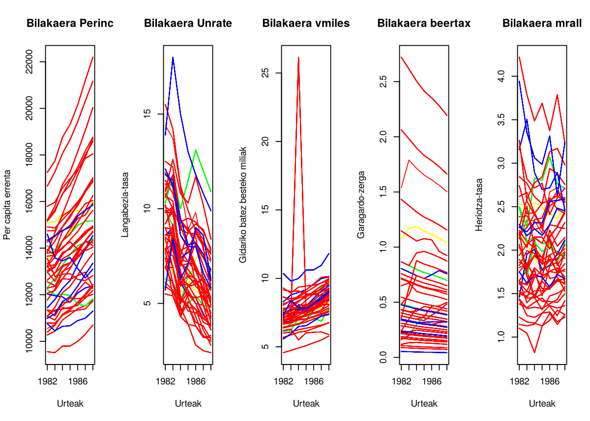
Grafikoetan ikusten denez, ezin da ondorio handirik atera, estatu asko baitaude espazio mugatu batean eta, beraz, gainjarri egiten dira, eta horrek ondorioak ateratzea eragozten du. Baina ikus dezakegu balio atipiko (outlier) argi bat dagoela vmiles-en bilakaeraren grafikoan.
Balio horiek lor ditzakegu eta balio atipikoa den egiaztatu.
Kodea erakutsi
print(which.max(data$vmiles)) #Balioaren posizioa lortzen dugu## [1] 171Kodea erakutsi
print(data$vmiles[170:176]) #Estatu honen bilakaera ikusten dugu eta argi dago balio atipikoa dela.## [1] 7.226798 26.148271 7.505625 7.867966 8.212686 8.368896 7.304109Beste ondorio bat izan daiteke gorria nagusi dela argi eta garbi. Erabili ditugun kontagailuak aprobetxatuz, sektore-grafiko (pie chart) bat egin dezakegu lege mota bakoitzeko zenbat estatu dauden ikusteko.
2.2 Sektore-grafikoa (pie chart)
Kodea erakutsi
# Sektore-grafikoa
layout(1)
slices <- c(contNN,contYN,contYY,contNY)
PorcentajeNN<-contNN/48*100
PorcentajeNY<-contNY/48*100
PorcentajeYN<-contYN/48*100
PorcentajeYY<-contYY/48*100
lbls <- c("Ez - Ez 77%", "Bai - Ez 12.5%", "Bai - Bai 6.25%", "Ez - Bai 4.16%")
#Ez-Ez - Kartzelarik ez eta komunitate-zerbitzurik ez
#Ez-Bai - Kartzelarik ez eta komunitate-zerbitzua bai
#Bai-Ez - Kartzela bai eta komunitate-zerbitzurik ez
#Bai-Bai - Kartzela bai eta komunitate-zerbitzua bai
pie(slices, labels = lbls, main="Lege desberdinak dituzten estatuen kopurua",col=c("red","blue","green","yellow"))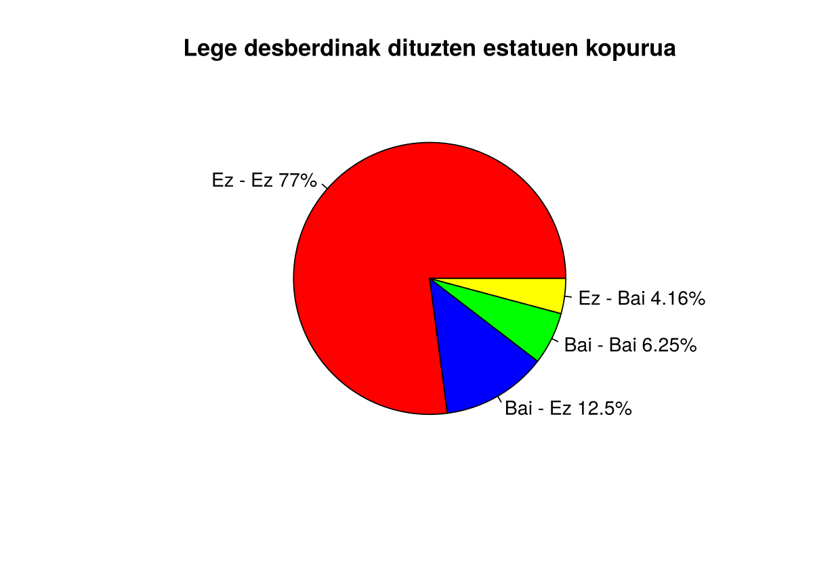
Lehen aipatu bezala, gehiengo zabala kartzelarik ez eta komunitate-zerbitzurik ez duten estatuek osatzen dute, 37 estatu zehazki. Beste lege batzuk jarraitzen dituzten estatuak %12.5, %6.25 eta %4.16 dira hurrenez hurren, hau da, 6, 3 eta 2 estatu.
Lehen grafikora itzuliz, ezin direnez ondorio gehiago atera, interesgarria da estatuen batez bestekoa kalkulatzea legeen arabera. Interesgarria litzateke, halaber, lege desberdinak dituzten estatuak estatistikoki esanguratsuki desberdinak diren galdetzea hainbat kategoriatan. Hau da, estatistikoki esanguratsua al da (batez beste) langabezia, heriotza-tasa, garagardo-zerga, errenta pertsonala eta batez besteko miliak handiagoak edo txikiagoak izatea estatuak jarraitzen duen lege motaren arabera?
2.3 Batez besteko bilakaera legeen arabera
Grafiko berria kalkulatzeko, guztiak batuko ditugu eta lege mota hori jarraitzen duten estatuen kopuruaz zatituko.
Kodea erakutsi
#Bektoreak hasieratzen ditugu
i<-1
#Errenta pertsonala
VectorNNperinc<-as.numeric(vector(length = 7))
VectorYYperinc<-as.numeric(vector(length = 7))
VectorYNperinc<-as.numeric(vector(length = 7))
VectorNYperinc<-as.numeric(vector(length = 7))
#Unrate
VectorNNunrate<-as.numeric(vector(length = 7))
VectorYYunrate<-as.numeric(vector(length = 7))
VectorYNunrate<-as.numeric(vector(length = 7))
VectorNYunrate<-as.numeric(vector(length = 7))
#Vmiles
VectorNNvmiles<-as.numeric(vector(length = 7))
VectorYYvmiles<-as.numeric(vector(length = 7))
VectorYNvmiles<-as.numeric(vector(length = 7))
VectorNYvmiles<-as.numeric(vector(length = 7))
#Beertax
VectorNNbeertax<-as.numeric(vector(length = 7))
VectorYYbeertax<-as.numeric(vector(length = 7))
VectorYNbeertax<-as.numeric(vector(length = 7))
VectorNYbeertax<-as.numeric(vector(length = 7))
#Mrall
VectorNNmrall<-as.numeric(vector(length = 7))
VectorYYmrall<-as.numeric(vector(length = 7))
VectorYNmrall<-as.numeric(vector(length = 7))
VectorNYmrall<-as.numeric(vector(length = 7))
while (i<dim(data)[1]) {
if (data$jaild[i]=="yes" && data$comserd[i]=="yes") {
j<-1
VectorYYperinc[j:(j+6)]<-data$perinc[i:(i+6)]+VectorYYperinc[j:(j+6)]
VectorYYunrate[j:(j+6)]<-data$unrate[i:(i+6)]+VectorYYunrate[j:(j+6)]
VectorYYvmiles[j:(j+6)]<-data$vmiles[i:(i+6)]+VectorYYvmiles[j:(j+6)]
VectorYYbeertax[j:(j+6)]<-data$beertax[i:(i+6)]+VectorYYbeertax[j:(j+6)]
VectorYYmrall[j:(j+6)]<-data$mrall[i:(i+6)]+VectorYYmrall[j:(j+6)]
}
if (data$jaild[i]=="no" && data$comserd[i]=="no") {
j<-1
VectorNNperinc[j:(j+6)]<-data$perinc[i:(i+6)]+VectorNNperinc[j:(j+6)]
VectorNNunrate[j:(j+6)]<-data$unrate[i:(i+6)]+VectorNNunrate[j:(j+6)]
VectorNNvmiles[j:(j+6)]<-data$vmiles[i:(i+6)]+VectorNNvmiles[j:(j+6)]
VectorNNbeertax[j:(j+6)]<-data$beertax[i:(i+6)]+VectorNNbeertax[j:(j+6)]
VectorNNmrall[j:(j+6)]<-data$mrall[i:(i+6)]+VectorNNmrall[j:(j+6)]
}
if (data$jaild[i]=="yes" && data$comserd[i]=="no") {
j<-1
VectorYNperinc[j:(j+6)]<-data$perinc[i:(i+6)]+VectorYNperinc[j:(j+6)]
VectorYNunrate[j:(j+6)]<-data$unrate[i:(i+6)]+VectorYNunrate[j:(j+6)]
VectorYNvmiles[j:(j+6)]<-data$vmiles[i:(i+6)]+VectorYNvmiles[j:(j+6)]
VectorYNbeertax[j:(j+6)]<-data$beertax[i:(i+6)]+VectorYNbeertax[j:(j+6)]
VectorYNmrall[j:(j+6)]<-data$mrall[i:(i+6)]+VectorYNmrall[j:(j+6)]
}
if (data$jaild[i]=="no" && data$comserd[i]=="yes") {
j<-1
VectorNYperinc[j:(j+6)]<-data$perinc[i:(i+6)]+VectorNYperinc[j:(j+6)]
VectorNYunrate[j:(j+6)]<-data$unrate[i:(i+6)]+VectorNYunrate[j:(j+6)]
VectorNYvmiles[j:(j+6)]<-data$vmiles[i:(i+6)]+VectorNYvmiles[j:(j+6)]
VectorNYbeertax[j:(j+6)]<-data$beertax[i:(i+6)]+VectorNYbeertax[j:(j+6)]
VectorNYmrall[j:(j+6)]<-data$mrall[i:(i+6)]+VectorNYmrall[j:(j+6)]
}
i=i+7
}
#Batez bestekoa kalkulatzen dugu
#Perinc
VectorNNperinc<-VectorNNperinc/contNN
VectorNYperinc<-VectorNYperinc/contNY
VectorYNperinc<-VectorYNperinc/contYN
VectorYYperinc<-VectorYYperinc/contYY
#Unrate
VectorNNunrate<-VectorNNunrate/contNN
VectorNYunrate<-VectorNYunrate/contNY
VectorYNunrate<-VectorYNunrate/contYN
VectorYYunrate<-VectorYYunrate/contYY
#Vmiles
VectorNNvmiles<-VectorNNvmiles/contNN
VectorNYvmiles<-VectorNYvmiles/contNY
VectorYNvmiles<-VectorYNvmiles/contYN
VectorYYvmiles<-VectorYYvmiles/contYY
#Beertax
VectorNNbeertax<-VectorNNbeertax/contNN
VectorNYbeertax<-VectorNYbeertax/contNY
VectorYNbeertax<-VectorYNbeertax/contYN
VectorYYbeertax<-VectorYYbeertax/contYY
#Mrall
VectorNNmrall<-VectorNNmrall/contNN
VectorNYmrall<-VectorNYmrall/contNY
VectorYNmrall<-VectorYNmrall/contYN
VectorYYmrall<-VectorYYmrall/contYY
layout(grid) #Bost grafiko lerro batean
#Perinc
plot(data$year[1:7],VectorNNperinc,type = "l",col="red",ylim = c(12200,16000),xlab = "Urteak", ylab = "Per capita errenta", main = "Batez bestekoa\nperinc")
lines(data$year[1:7],VectorYYperinc,type = "l",col="green")
lines(data$year[1:7],VectorNYperinc,type = "l",col="yellow")
lines(data$year[1:7],VectorYNperinc,type = "l",col="blue")
#Unrate
plot(data$year[1:7],VectorNNunrate,type = "l",col="red",ylim= c(5.1,11.2),xlab = "Urteak", ylab = "Langabezia-tasa", main = "Batez bestekoa\nunrate")
lines(data$year[1:7],VectorYYunrate,type = "l",col="green")
lines(data$year[1:7],VectorNYunrate,type = "l",col="yellow")
lines(data$year[1:7],VectorYNunrate,type = "l",col="blue")
#Vmiles
plot(data$year[1:7],VectorNNvmiles,type = "l",col="red",ylim = c(6.75,9.5),xlab = "Urteak", ylab = "Gidariko batez besteko miliak", main = "Batez bestekoa\nvmiles")
lines(data$year[1:7],VectorYYvmiles,type = "l",col="green")
lines(data$year[1:7],VectorNYvmiles,type = "l",col="yellow")
lines(data$year[1:7],VectorYNvmiles,type = "l",col="blue")
#Beertax
plot(data$year[1:7],VectorNNbeertax,type = "l",col="red",ylim = c(0.3,0.7),xlab = "Urteak", ylab = "Garagardo-zerga", main = "Batez bestekoa\nbeertax")
lines(data$year[1:7],VectorYYbeertax,type = "l",col="green")
lines(data$year[1:7],VectorNYbeertax,type = "l",col="yellow")
lines(data$year[1:7],VectorYNbeertax,type = "l",col="blue")
#Mrall
plot(data$year[1:7],VectorNNmrall,type = "l",col="red",ylim = c(1.8,2.5),xlab = "Urteak", ylab = "Heriotza-tasa", main = "Batez bestekoa\nmrall")
lines(data$year[1:7],VectorYYmrall,type = "l",col="green")
lines(data$year[1:7],VectorNYmrall,type = "l",col="yellow")
lines(data$year[1:7],VectorYNmrall,type = "l",col="blue")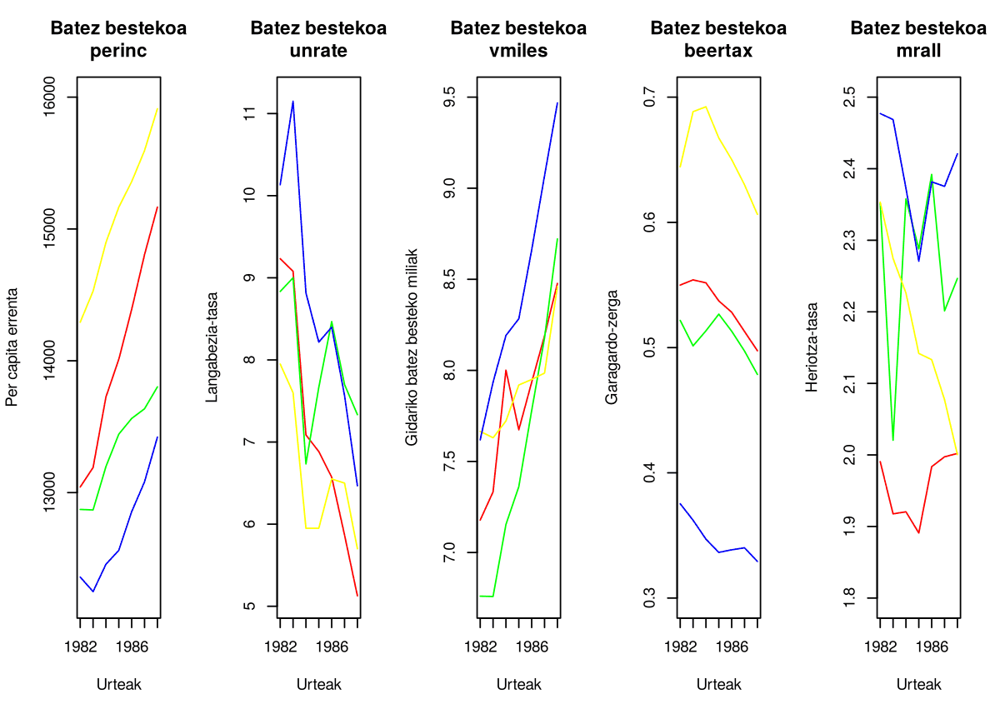
Grafiko honetan joerak argiago ikus daitezke. Dirudienez, batez beste, estatu guztietan per capita errentaren bilakaera, legeak gorabehera, handitu egiten da eta langabezia gutxitu. Gainera, dirudienez gidari bakoitzak batez beste egindako miliak handitu egiten dira, eta garagardo-zerga eta heriotza-tasa konstante mantentzen dira edo apur bat jaisten dira, orokorrean.
Era berean, dirudienez emaitzarik onenak edo bilakaerarik onena kategoria guztietan marra horiak du. Hau da, lege hau jarraitzen duten estatuek: kartzelarik ez eta zerbitzuak bai.
Ikus dezakegu lehen hirugarren grafikoan genuen balio atipikoa xurgatu egin dela eta haren ordez piko txiki bat baino ez dugula ikusten. Hau da lege mota hori duten estatu asko ditugulako eta, beraz, batez bestekoa egitean, txikitu egin da edo balio normalago bihurtu da.
Ezin dugu baieztatu aldaketa hau beste lege batzuk jarraitzen dituzten estatuetan gertatu den, estatu asko ez ditugulako eta, beraz, ez dakigulako beren datuek balio atipikorik duten ala ez. Beraz, baliteke behaketetatik lortutako datuek lege horiek dituzten estatuek benetan bizi dutena ondo ez islatzea. Hau kontuan hartu beharko da estatistika desberdinak egitean eta baita ondorioetan ere.
2.4 Boxplot-a, batez besteko bilakaera legeen arabera
Jarraian, grafiko berberak marraztuko ditugu baina boxplot moduan, datuak hobeto ikusteko eta balio atipikorik dugun ikusteko.
Kodea erakutsi
layout(grid)
boxplot(VectorNNperinc,VectorNYperinc,VectorYNperinc,VectorYYperinc,col = c("red","yellow","blue","green"),names = c("Ez-Ez","Ez-Bai","Bai-Ez","Bai-Bai"),main="Batez bestekoa\nperinc")
boxplot(VectorNNunrate,VectorNYunrate,VectorYNunrate,VectorYYunrate,col = c("red","yellow","blue","green"),names = c("Ez-Ez","Ez-Bai","Bai-Ez","Bai-Bai"),main="Batez bestekoa\nunrate")
boxplot(VectorNNvmiles,VectorNYvmiles,VectorYNvmiles,VectorYYvmiles,col = c("red","yellow","blue","green"),names = c("Ez-Ez","Ez-Bai","Bai-Ez","Bai-Bai"),main="Batez bestekoa\nvmiles")
boxplot(VectorNNbeertax,VectorNYbeertax,VectorYNbeertax,VectorYYbeertax,col = c("red","yellow","blue","green"),names = c("Ez-Ez","Ez-Bai","Bai-Ez","Bai-Bai"),main="Batez bestekoa\nbeertax")
boxplot(VectorNNmrall,VectorNYmrall,VectorYNmrall,VectorYYmrall,col = c("red","yellow","blue","green"),names = c("Ez-Ez","Ez-Bai","Bai-Ez","Bai-Bai"),main="Batez bestekoa\nmrall")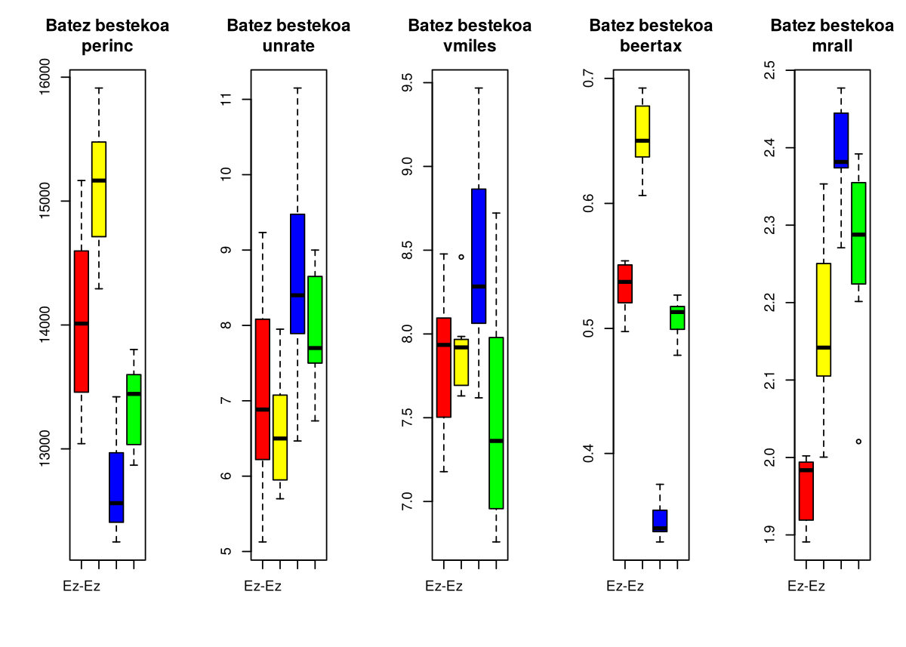
Itxuraz, batez bestekoak desberdinak izan daitezke edo dirudite. Bi balio atipiko baino ez ditugu, bat 3. grafikoko kutxa horian eta beste bat azken grafikoko berdean.
Lehen esan dudan bezala, ikusten da 3. grafikoko taldea gorriaren balio atipikoa balio normal bihurtu dela.
2.5 Shapiro testa
Ikusiko dugu balio hauek banaketa normal batetik datozen ala ez, batez bestekoen arteko diferentziaren testa aplikatu ahal izateko.
Kodea erakutsi
#Shapiro.test gure datuak zenbateraino diren normalak ikusteko
#Shapiro Perinc
print(shapiro.test(VectorNNperinc))##
## Shapiro-Wilk normality test
##
## data: VectorNNperinc
## W = 0.95825, p-value = 0.8036Kodea erakutsi
print(shapiro.test(VectorNYperinc))##
## Shapiro-Wilk normality test
##
## data: VectorNYperinc
## W = 0.97883, p-value = 0.9537Kodea erakutsi
print(shapiro.test(VectorYNperinc))##
## Shapiro-Wilk normality test
##
## data: VectorYNperinc
## W = 0.93055, p-value = 0.5555Kodea erakutsi
print(shapiro.test(VectorYYperinc))##
## Shapiro-Wilk normality test
##
## data: VectorYYperinc
## W = 0.90873, p-value = 0.3871Kodea erakutsi
#Shapiro Unrate
print(shapiro.test(VectorNNunrate))##
## Shapiro-Wilk normality test
##
## data: VectorNNunrate
## W = 0.91483, p-value = 0.4303Kodea erakutsi
print(shapiro.test(VectorNYunrate))##
## Shapiro-Wilk normality test
##
## data: VectorNYunrate
## W = 0.87902, p-value = 0.2221Kodea erakutsi
print(shapiro.test(VectorYNunrate))##
## Shapiro-Wilk normality test
##
## data: VectorYNunrate
## W = 0.97477, p-value = 0.9305Kodea erakutsi
print(shapiro.test(VectorYYunrate))##
## Shapiro-Wilk normality test
##
## data: VectorYYunrate
## W = 0.94402, p-value = 0.6752Kodea erakutsi
#Shapiro vmiles
print(shapiro.test(VectorNNvmiles))##
## Shapiro-Wilk normality test
##
## data: VectorNNvmiles
## W = 0.96814, p-value = 0.8848Kodea erakutsi
print(shapiro.test(VectorNYvmiles))##
## Shapiro-Wilk normality test
##
## data: VectorNYvmiles
## W = 0.86423, p-value = 0.1651Kodea erakutsi
print(shapiro.test(VectorYNvmiles))##
## Shapiro-Wilk normality test
##
## data: VectorYNvmiles
## W = 0.97075, p-value = 0.9038Kodea erakutsi
print(shapiro.test(VectorYYvmiles))##
## Shapiro-Wilk normality test
##
## data: VectorYYvmiles
## W = 0.92999, p-value = 0.5508Kodea erakutsi
#Shapiro beertax
print(shapiro.test(VectorNNbeertax))##
## Shapiro-Wilk normality test
##
## data: VectorNNbeertax
## W = 0.89985, p-value = 0.3301Kodea erakutsi
print(shapiro.test(VectorNYbeertax))##
## Shapiro-Wilk normality test
##
## data: VectorNYbeertax
## W = 0.95968, p-value = 0.8159Kodea erakutsi
print(shapiro.test(VectorYNbeertax))##
## Shapiro-Wilk normality test
##
## data: VectorYNbeertax
## W = 0.9011, p-value = 0.3377Kodea erakutsi
print(shapiro.test(VectorYYbeertax))##
## Shapiro-Wilk normality test
##
## data: VectorYYbeertax
## W = 0.94578, p-value = 0.6912Kodea erakutsi
#Shapiro mrall
print(shapiro.test(VectorNNmrall))##
## Shapiro-Wilk normality test
##
## data: VectorNNmrall
## W = 0.83769, p-value = 0.09455Kodea erakutsi
print(shapiro.test(VectorNYmrall))##
## Shapiro-Wilk normality test
##
## data: VectorNYmrall
## W = 0.98356, p-value = 0.975Kodea erakutsi
print(shapiro.test(VectorYNmrall))##
## Shapiro-Wilk normality test
##
## data: VectorYNmrall
## W = 0.91765, p-value = 0.4514Kodea erakutsi
print(shapiro.test(VectorYYmrall))##
## Shapiro-Wilk normality test
##
## data: VectorYYmrall
## W = 0.88957, p-value = 0.2724Emaitza hauei so eginda, ondoriozta dezakegu datuak arrazoizko mailan normalak direla eta, beraz, batez bestekoen arteko diferentziaren testa aplika dezakegula. 2 talde baino gehiago ditugunez, grafiko bakoitzean ANOVA testa erabili beharko dugu t.test-aren ordez.
2.6 ANOVA testa
Gure hipotesi nulua da kategoria bakoitzeko 5 taldeen batez bestekoen artean ez dagoela alderik. Hau da, batez beste, estatuak jarraitzen duen lege motaren arabera, bere batez bestekoak berdinak direla perinc, unrate, vmiles, beertax eta mrall-en kasuan. Beraz, hipotesi alternatiboa izango da batez bestekoen artean alde bat badagoela.
Kodea erakutsi
DatosAnova<-data.frame(Grupo1 = NA,perinc=NA,Grupo2 = NA,unrate=NA,Grupo3=NA,vmiles=NA,Grupo4=NA,beertax=NA,Grupo5=NA,mrall=NA)
for (i in 1:(7*4)) {
if (i<8) {
DatosAnova[i,1]<-"VectorNYperinc"
DatosAnova[i,2]<-VectorNYperinc[i]
DatosAnova[i,3]<-"VectorNYunrate"
DatosAnova[i,4]<-VectorNYunrate[i]
DatosAnova[i,5]<-"VectorNYvmiles"
DatosAnova[i,6]<-VectorNYvmiles[i]
DatosAnova[i,7]<-"VectorNYbeertax"
DatosAnova[i,8]<-VectorNYbeertax[i]
DatosAnova[i,9]<-"VectorNYmrall"
DatosAnova[i,10]<-VectorNYmrall[i]
}
if (i>7 && i<15) {
DatosAnova[i,1]<-"VectorNNperinc"
DatosAnova[i,2]<-VectorNNperinc[i-7]
DatosAnova[i,3]<-"VectorNNunrate"
DatosAnova[i,4]<-VectorNNunrate[i-7]
DatosAnova[i,5]<-"VectorNNvmiles"
DatosAnova[i,6]<-VectorNNvmiles[i-7]
DatosAnova[i,7]<-"VectorNNbeertax"
DatosAnova[i,8]<-VectorNNbeertax[i-7]
DatosAnova[i,9]<-"VectorNNmrall"
DatosAnova[i,10]<-VectorNNmrall[i-7]
}
if (i>14 && i<23) {
DatosAnova[i,1]<-"VectorYNperinc"
DatosAnova[i,2]<-VectorYNperinc[i-14]
DatosAnova[i,3]<-"VectorYNunrate"
DatosAnova[i,4]<-VectorYNunrate[i-14]
DatosAnova[i,5]<-"VectorYNvmiles"
DatosAnova[i,6]<-VectorYNvmiles[i-14]
DatosAnova[i,7]<-"VectorYNbeertax"
DatosAnova[i,8]<-VectorYNbeertax[i-14]
DatosAnova[i,9]<-"VectorYNmrall"
DatosAnova[i,10]<-VectorYNmrall[i-14]
}
if (i>21) {
DatosAnova[i,1]<-"VectorYYperinc"
DatosAnova[i,2]<-VectorYYperinc[i-21]
DatosAnova[i,3]<-"VectorYYunrate"
DatosAnova[i,4]<-VectorYYunrate[i-21]
DatosAnova[i,5]<-"VectorYYvmiles"
DatosAnova[i,6]<-VectorYYvmiles[i-21]
DatosAnova[i,7]<-"VectorYYbeertax"
DatosAnova[i,8]<-VectorYYbeertax[i-21]
DatosAnova[i,9]<-"VectorYYmrall"
DatosAnova[i,10]<-VectorYYmrall[i-21]
}
}
Result.Aov.perinc<-aov(DatosAnova$perinc ~ DatosAnova$Grupo1)
Result.Aov.unrate<-aov(DatosAnova$unrate ~ DatosAnova$Grupo2)
Result.Aov.vmiles<-aov(DatosAnova$vmiles ~ DatosAnova$Grupo3)
Result.Aov.beertax<-aov(DatosAnova$beertax ~ DatosAnova$Grupo4)
Result.Aov.mrall<-aov(DatosAnova$mrall ~ DatosAnova$Grupo5)
summary(Result.Aov.perinc)## Df Sum Sq Mean Sq F value Pr(>F)
## DatosAnova$Grupo1 3 22149838 7383279 23.02 3.04e-07 ***
## Residuals 24 7697474 320728
## ---
## Signif. codes: 0 '***' 0.001 '**' 0.01 '*' 0.05 '.' 0.1 ' ' 1Kodea erakutsi
summary(Result.Aov.unrate)## Df Sum Sq Mean Sq F value Pr(>F)
## DatosAnova$Grupo2 3 17.66 5.887 3.768 0.0239 *
## Residuals 24 37.50 1.562
## ---
## Signif. codes: 0 '***' 0.001 '**' 0.01 '*' 0.05 '.' 0.1 ' ' 1Kodea erakutsi
summary(Result.Aov.vmiles)## Df Sum Sq Mean Sq F value Pr(>F)
## DatosAnova$Grupo3 3 3.170 1.0566 3.363 0.0353 *
## Residuals 24 7.541 0.3142
## ---
## Signif. codes: 0 '***' 0.001 '**' 0.01 '*' 0.05 '.' 0.1 ' ' 1Kodea erakutsi
summary(Result.Aov.beertax)## Df Sum Sq Mean Sq F value Pr(>F)
## DatosAnova$Grupo4 3 0.3353 0.11175 227.9 <2e-16 ***
## Residuals 24 0.0118 0.00049
## ---
## Signif. codes: 0 '***' 0.001 '**' 0.01 '*' 0.05 '.' 0.1 ' ' 1Kodea erakutsi
summary(Result.Aov.mrall)## Df Sum Sq Mean Sq F value Pr(>F)
## DatosAnova$Grupo5 3 0.7136 0.23788 25.25 1.34e-07 ***
## Residuals 24 0.2261 0.00942
## ---
## Signif. codes: 0 '***' 0.001 '**' 0.01 '*' 0.05 '.' 0.1 ' ' 1p-balio guztiak esanguratsuak atera dira, beraz, hipotesi nulua baztertu behar dugu. Orduan, esan dezakegu batez beste kategoria guztietan alde bat dagoela eta estatu batek lege mota bat edo beste izateak benetan eragiten duela.
Purista izanda, 3. eta 5. grafikoetan bi balio atipiko ditugunez, ezin dugu t.test-a erabili, ezta bi talde baino gehiagorako hedapena den ANOVA ere. Horietarako, medianen arteko diferentziaren testa egin beharko litzateke, hau da, Wilcoxon-en testa. Baina, bi talde baino gehiago ditugunez, hedatua erabili beharko litzateke, hau da, Kruskal testa.
2.7 Kruskal testa
Espero zitekeena da p-balioak handitzea baina ez dakigu estatistikoki esanguratsuak izaten jarraituko duten ala ez.
Kodea erakutsi
#Kruskal testa 3. eta 5. grafikoetan
kruskal.test(DatosAnova$vmiles ~ DatosAnova$Grupo3)##
## Kruskal-Wallis rank sum test
##
## data: DatosAnova$vmiles by DatosAnova$Grupo3
## Kruskal-Wallis chi-squared = 6.3568, df = 3, p-value = 0.09548Kodea erakutsi
kruskal.test(DatosAnova$mrall ~ DatosAnova$Grupo5)##
## Kruskal-Wallis rank sum test
##
## data: DatosAnova$mrall by DatosAnova$Grupo5
## Kruskal-Wallis chi-squared = 20.835, df = 3, p-value = 0.0001139Hipotesi nulua baztertzen jarraitzen da 5. grafikoan baina orain, 3. grafikoan, taldeen batez bestekoak jada ez direla desberdinak esaten digu, p-balioa 0.05 baino handiagoa baita.
Beraz, esan dezakegu eragina duela estatuek lege mota bat edo beste izateak kategoria guztietan edo, purista izanda, guztietan gidariek egindako batez besteko miliak izan ezik.
Era berean, kontuan hartu behar da, lehen aipatu bezala, horia, urdina eta berdea koloreek agian ez dutela %100ean islatzen lege horiek dituzten estatuek benetan bizi dutena, gure datuetan estatu gutxi daudelako.
3. Erregresio lineal sinple orokorra
Begiz ikusiko dugu kategoria desberdinen artean erlazio lineal posiblerik ba ote dagoen. Konbinazio posible guztiak egiten ditugu legeak kontuan hartu gabe, hau da, datu guztiekin erlazio linealik dagoen ikusten dugu orokorrean.
Kodea erakutsi
layout(grid)
#1. konbinazioa
plot(data$perinc,data$unrate,xlab = "Errenta pertsonala",ylab = "Langabezia-tasa")
plot(data$perinc,data$vmiles,xlab = "Errenta pertsonala",ylab = "Batez besteko miliak")
plot(data$perinc,data$beertax,xlab = "Errenta pertsonala",ylab = "Garagardo-zerga")
plot(data$perinc,data$mrall,xlab = "Errenta pertsonala",ylab = "Heriotza-tasa")
plot(data$unrate,data$vmiles,xlab = "Langabezia-tasa", ylab = "Batez besteko miliak")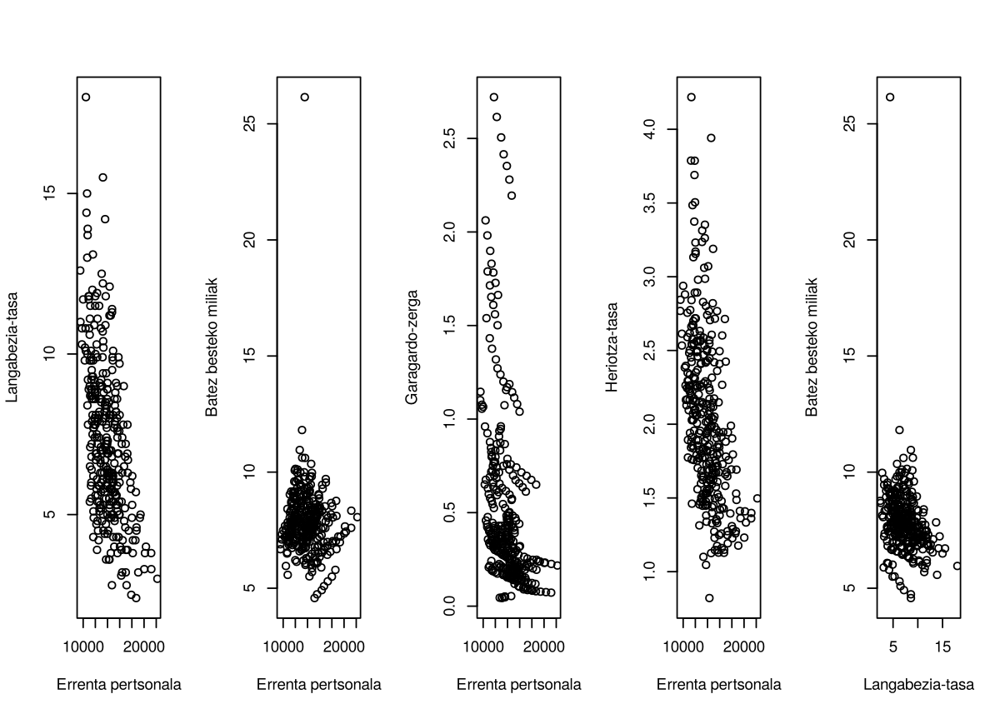
Kodea erakutsi
#2. konbinazioa
plot(data$unrate,data$beertax,xlab = "Langabezia-tasa",ylab = "Garagardo-zerga")
plot(data$unrate,data$mrall,xlab = "Langabezia-tasa",ylab = "Heriotza-tasa")
plot(data$vmiles,data$beertax,xlab = "Batez besteko miliak",ylab = "Garagardo-zerga")
plot(data$vmiles,data$mrall,xlab = "Batez besteko miliak",ylab = "Heriotza-tasa")
plot(data$beertax,data$mrall,xlab = "Garagardo-zerga",ylab = "Heriotza-tasa")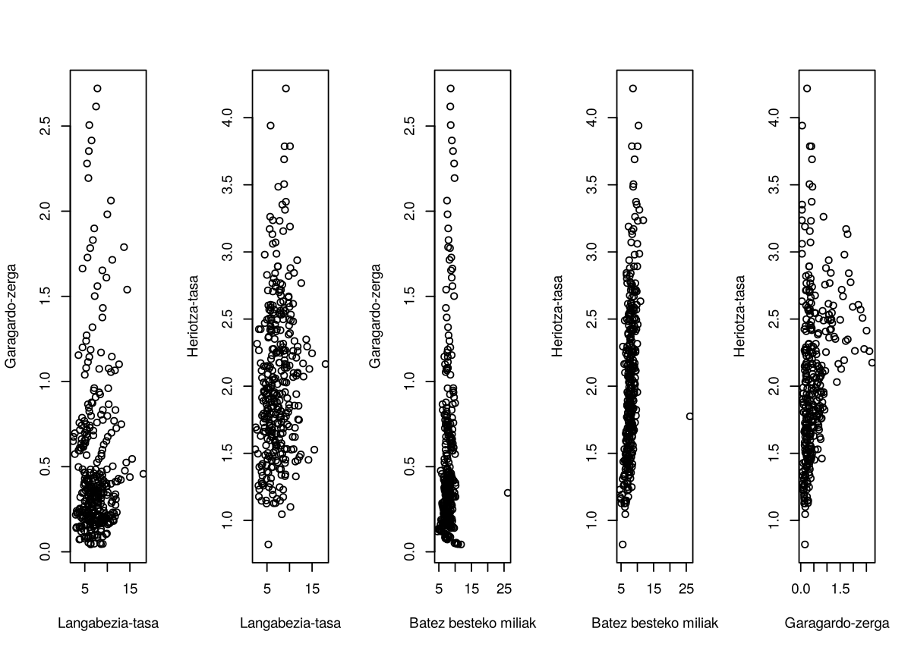
Itxuraz, ez dago erlazio linealik eta askok ez dute korrelaziorik edo bat ez dirudi bestearen menpe dagoenik. Nire iritziz, perinc vs unrate eta perinc vs mrall erregresio lineal sinplea egitea baino ez litzateke interesgarria, hauek baitira erlazio lineal gutxi-asko duin bat izateko probableenak.
3.1 Perinc vs Unrate
Kodea erakutsi
#Perinc vs unrate
perincout<-data$perinc
unrateout<-data$unrate
perinc.unrate.lm<-lm(unrateout ~ perincout)
summary(perinc.unrate.lm)##
## Call:
## lm(formula = unrateout ~ perincout)
##
## Residuals:
## Min 1Q Median 3Q Max
## -4.4452 -1.4446 -0.1475 1.2085 8.5191
##
## Coefficients:
## Estimate Std. Error t value Pr(>|t|)
## (Intercept) 1.599e+01 7.205e-01 22.19 <2e-16 ***
## perincout -6.225e-04 5.124e-05 -12.15 <2e-16 ***
## ---
## Signif. codes: 0 '***' 0.001 '**' 0.01 '*' 0.05 '.' 0.1 ' ' 1
##
## Residual standard error: 2.113 on 334 degrees of freedom
## Multiple R-squared: 0.3065, Adjusted R-squared: 0.3044
## F-statistic: 147.6 on 1 and 334 DF, p-value: < 2.2e-16Kodea erakutsi
#Ikus daitekeenez, beta1-en, intercept-aren eta erregresio linealaren p-balioak oso esanguratsuak dira. Hala ere, R-squared ez da oso ona eta, emaitzaren arabera, denboraren %30ean soilik aurreikusten dugu ondo.
#Erroreek batez bestekoa 0 duen banaketa normala jarraitu behar dute
grid1<-matrix(c(1,2),ncol = 2,nrow = 1)
layout(grid1)
plot(perinc.unrate.lm[["residuals"]],xlab = "Behaketa-zenbakia",ylab = "Errorea",main = "Errorea behaketa bakoitzean")
mean(perinc.unrate.lm[["residuals"]]) #Ia 0 da## [1] 9.603192e-17Kodea erakutsi
abline(h=mean(perinc.unrate.lm[["residuals"]]))
plot(density(perinc.unrate.lm[["residuals"]]),ylab = "Dentsitatea",main = "Erroreen dentsitate-funtzioa")
shapiro.test(perinc.unrate.lm[["residuals"]]) #Normalak direla baieztatzen dugu##
## Shapiro-Wilk normality test
##
## data: perinc.unrate.lm[["residuals"]]
## W = 0.97767, p-value = 4.449e-05Kodea erakutsi
#"Teorikoa"
x<-seq(-10,10,0.01)
desviacionestandar<-sd(perinc.unrate.lm[["residuals"]])
lines(x,dnorm(x,0,desviacionestandar),col="red")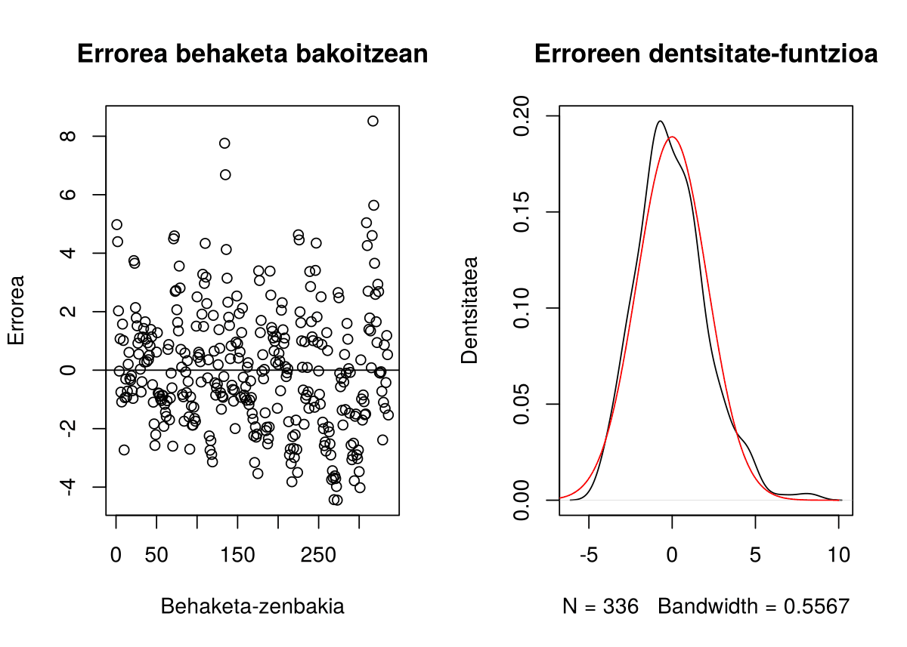
Ikus dezakegunez, erroreek batez bestekoa nulua duen banaketa normala jarraitzen dute. Hala ere, ez daude berdin banatuta. Ikus daiteke errore gehiago daudela alde negatiboan positiboan baino, eta balio positibo handiek batez bestekoa zerorantz mugitzen dute.
Dentsitate-grafikoan, marra gorri bat dugu erroreen dentsitate-funtzioaren gainean. Honek erroreek bariantza berarekin jarraituko lukeen dentsitate-funtzio “teorikoari” egiten dio erreferentzia, eta honekin aurreko paragrafoan azaldutakoa baieztatu dezakegu: erroreak alde negatiboan kontzentratzen dira.
Kodea erakutsi
#%95eko konfiantza-tarteak marrazten ditugu
layout(1)
plot(data$perinc,data$unrate,cex=0.5,xlab = "Errenta pertsonala",ylab = "Langabezia-tasa",main = "Langabezia-tasaren aldaketa errentarekin",sub = "%95eko konfiantza-tartea")
abline(perinc.unrate.lm)
new<-data.frame(perincout=seq(9000,23070,42))
prediccionrecta <- predict(perinc.unrate.lm, new, interval = 'confidence')
lines(seq(9000,23070,42),(prediccionrecta[, 2]), lty = 2)
lines(seq(9000,23070,42),(prediccionrecta[, 3]), lty = 2)
prediccionrecta <- predict(perinc.unrate.lm, new, interval = 'prediction')
lines(seq(9000,23070,42),(prediccionrecta[, 2]), lty = 2,col="red")
lines(seq(9000,23070,42),(prediccionrecta[, 3]), lty = 2,col="red")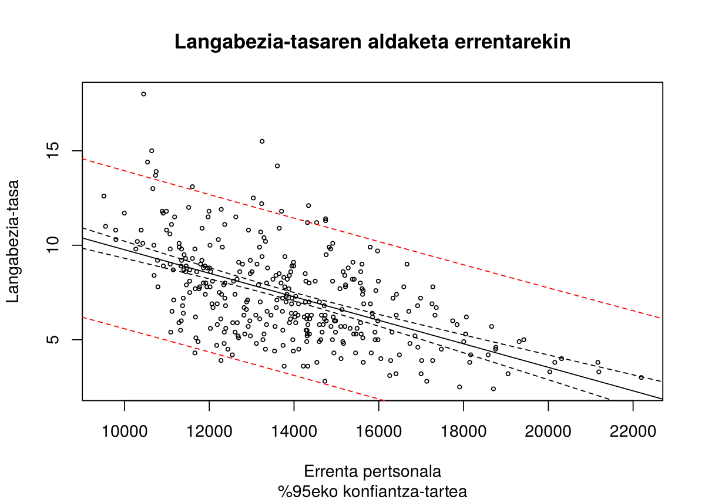
Tarteko marra beltzekin, %95eko konfiantzarekin aurreikusten ari gara erregresio-zuzenaren balioa non erori daitekeen. Tarteko marra gorriek %95eko konfiantzaz adierazten digute edozein puntu indibidualek bi marra hauen artean egoteko duen probabilitatea.
Beraz, %30ean asmatzen ari garen arren, esan dezakegu bi aldagaien artean erlazioa dagoela. Ikusten da errenta pertsonala handitzen den neurrian langabezia-tasa jaisten dela.
3.2 Perinc vs Mrall
Urrats berberak jarraituko ditugu baina orain errenta pertsonalarekiko eta heriotza-tasarekiko.
Kodea erakutsi
#Perinc vs mrall
mrallout<-data$mrall
perinc.mrall.lm<-lm(mrallout ~ perincout)
summary(perinc.mrall.lm)##
## Call:
## lm(formula = mrallout ~ perincout)
##
## Residuals:
## Min 1Q Median 3Q Max
## -1.16471 -0.33899 -0.07772 0.25583 1.99163
##
## Coefficients:
## Estimate Std. Error t value Pr(>|t|)
## (Intercept) 3.7926423 0.1687638 22.47 <2e-16 ***
## perincout -0.0001262 0.0000120 -10.52 <2e-16 ***
## ---
## Signif. codes: 0 '***' 0.001 '**' 0.01 '*' 0.05 '.' 0.1 ' ' 1
##
## Residual standard error: 0.4949 on 334 degrees of freedom
## Multiple R-squared: 0.2488, Adjusted R-squared: 0.2466
## F-statistic: 110.6 on 1 and 334 DF, p-value: < 2.2e-16Kodea erakutsi
#Lehen bezala, p-balioak oso esanguratsuak dira baina R-squared-ek dio denboraren %24an asmatzen dugula soilik. Beraz, erregresio hau aurrekoa baino okerragoa da eta, ondorioz, langabezia-tasak errenta hobeto aurreikusten du heriotza-tasak baino
#Erroreek batez bestekoa 0 duen banaketa normala jarraitu behar dute
layout(grid1)
plot(perinc.mrall.lm[["residuals"]],xlab = "Behaketa-zenbakia",ylab = "Errorea",main = "Errorea behaketa bakoitzean")
mean(perinc.mrall.lm[["residuals"]]) #0 da## [1] -2.626544e-17Kodea erakutsi
abline(h=mean(perinc.mrall.lm[["residuals"]]))
plot(density(perinc.mrall.lm[["residuals"]]),ylab = "Dentsitatea",main = "Erroreen dentsitate-funtzioa")
x<-seq(-2,2,0.01)
desviacionestandar<-sd(perinc.mrall.lm[["residuals"]])
lines(x,dnorm(x,0,desviacionestandar),col="red")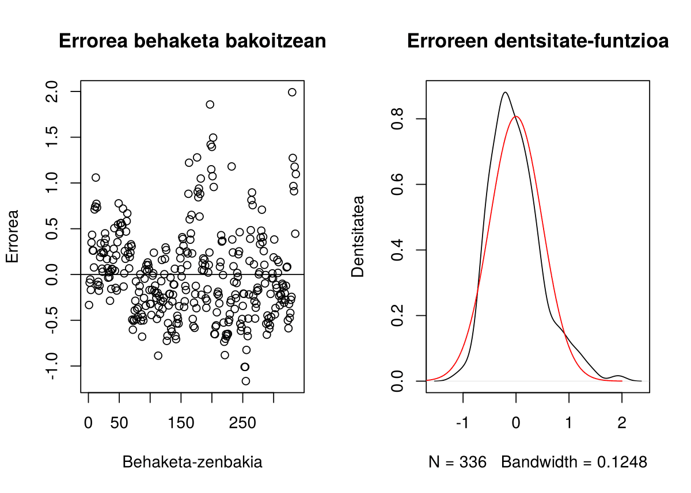
Kodea erakutsi
shapiro.test(perinc.mrall.lm[["residuals"]]) #Normalak direla baieztatzen dugu##
## Shapiro-Wilk normality test
##
## data: perinc.mrall.lm[["residuals"]]
## W = 0.95749, p-value = 2.692e-08Aurreko erregresio linealean bezala, hauek batez bestekoa nulua duen banaketa normala jarraitzen dute. Halaber, eskuineko grafikotik baieztatu dezakegu erroreak gehiago kontzentratzen direla alde negatiboan.
Kodea erakutsi
layout(1)
#%95eko konfiantza-tarteak marrazten ditugu
plot(data$perinc,data$mrall,cex=0.5,xlab = "Errenta pertsonala",ylab = "Heriotza-tasa",main = "Heriotza-tasaren aldaketa errentarekin",sub = "%95eko konfiantza-tartea")
abline(perinc.mrall.lm)
new<-data.frame(perincout=seq(9000,23070,42))
prediccionrecta <- predict(perinc.mrall.lm, new, interval = 'confidence')
lines(seq(9000,23070,42),(prediccionrecta[, 2]), lty = 2)
lines(seq(9000,23070,42),(prediccionrecta[, 3]), lty = 2)
prediccionrecta <- predict(perinc.mrall.lm, new, interval = 'prediction')
lines(seq(9000,23070,42),(prediccionrecta[, 2]), lty = 2,col="red")
lines(seq(9000,23070,42),(prediccionrecta[, 3]), lty = 2,col="red")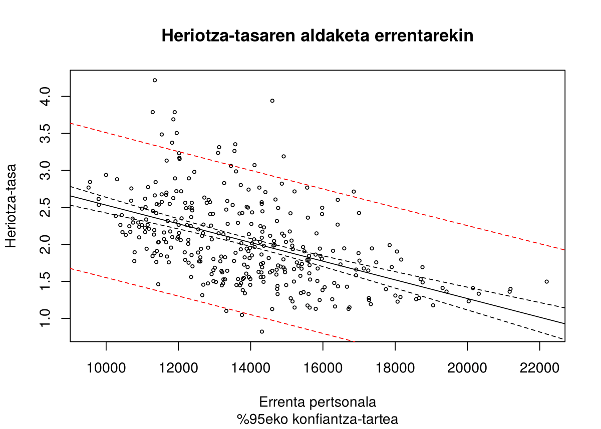
Beraz, erregresioa ikusita baieztatu dezakegu %24an asmatzen ari garen arren, errentak handitzen diren neurrian heriotza-tasa jaisten dela. Baina honek ez du esan nahi bat ez denik bestearen kausa, korrelazioak ez baitu kausalitaterik inplikatzen.
4. Erregresio lineal anizkoitz orokorra
Per capita errentaren aurreikuspenerako zein aldagai diren edo ez diren esanguratsuak ikusi eta ebaluatu beharrean, erregresio lineal anizkoitz baten bidez egingo dugu eta horrela datu estatistikoak lortuko ditugu.
Lehenik eta behin eredu osoa lortuko dugu.
Kodea erakutsi
#Gainerako parametroak data.frame-tik kanpoko bektoreetan ateratzen ditugu
beertaxout<-data$beertax
vmilesout<-data$vmiles
fullmodel<-lm(perincout ~ unrateout+vmilesout+beertaxout+mrallout)
summary(fullmodel)##
## Call:
## lm(formula = perincout ~ unrateout + vmilesout + beertaxout +
## mrallout)
##
## Residuals:
## Min 1Q Median 3Q Max
## -3385.8 -1035.8 -77.9 1043.0 5361.1
##
## Coefficients:
## Estimate Std. Error t value Pr(>|t|)
## (Intercept) 20998.03 596.15 35.223 < 2e-16 ***
## unrateout -446.34 36.44 -12.247 < 2e-16 ***
## vmilesout -92.87 67.13 -1.383 0.167
## beertaxout -1259.79 184.45 -6.830 4.08e-11 ***
## mrallout -1205.30 175.30 -6.876 3.09e-11 ***
## ---
## Signif. codes: 0 '***' 0.001 '**' 0.01 '*' 0.05 '.' 0.1 ' ' 1
##
## Residual standard error: 1535 on 331 degrees of freedom
## Multiple R-squared: 0.5411, Adjusted R-squared: 0.5355
## F-statistic: 97.57 on 4 and 331 DF, p-value: < 2.2e-16Emaitzak egiaztatuta, ikus dezakegu eredu osoarekin soilik per capita errenta lehen baino hobeto aurreikusten ari garela. Nahiz eta F-estatistikoa apur bat okerragoa atera den, p-balioa berdin esanguratsua da. Gainera, errore estandar askoz txikiagoa dugu eta R-squared %54ra igotzen da. Beraz, esan dezakegu eredu honek hobeto aurreikusten duela, nahiz eta ez dakigun lor dezakegun onena den.
Horretarako, aldagaien hautaketa egingo dugu AIC erabiliz. Hasieran, espero dugu vmiles kenduko digula, ereduarentzat esanguratsua ez delako edo aurreikuspena oztopatzen duelako, nahiz eta ez duen horrela izan beharrik eta beste aldagai batzuk ere ken ditzakeen.
Kodea erakutsi
#reducedmodelAIC<-stepAIC(fullmodel,direction="backward")
##Oharra: stepAIC funtzioarekin erroreak izan nituenez R Markdown-en, aurreko lerroak funtzionatzen ez badu, exekutatu hurrengoa. Lortzen den emaitza da
reducedmodelAIC<-lm(perincout ~ unrateout + beertaxout + mrallout)
#Eredu murriztua
summary(reducedmodelAIC)##
## Call:
## lm(formula = perincout ~ unrateout + beertaxout + mrallout)
##
## Residuals:
## Min 1Q Median 3Q Max
## -3459.7 -998.8 -93.7 1025.0 5368.5
##
## Coefficients:
## Estimate Std. Error t value Pr(>|t|)
## (Intercept) 20348.04 367.44 55.377 < 2e-16 ***
## unrateout -426.93 33.68 -12.675 < 2e-16 ***
## beertaxout -1266.70 184.64 -6.861 3.37e-11 ***
## mrallout -1314.02 156.91 -8.374 1.58e-15 ***
## ---
## Signif. codes: 0 '***' 0.001 '**' 0.01 '*' 0.05 '.' 0.1 ' ' 1
##
## Residual standard error: 1538 on 332 degrees of freedom
## Multiple R-squared: 0.5384, Adjusted R-squared: 0.5343
## F-statistic: 129.1 on 3 and 332 DF, p-value: < 2.2e-16Espero zen bezala, vmiles aldagaia kendu dugu eredua okertzen zuelako. Beraz, hau izango litzateke per capita errenta hoberen hurbil genezakeen eredua.
Ikusiko dugu estatistikoki esanguratsua den lortutako eredu murriztua eredu osoa baino hobea dela.
Kodea erakutsi
#ANOVA ereduak alderatzeko
anova(fullmodel,reducedmodelAIC)## Analysis of Variance Table
##
## Model 1: perincout ~ unrateout + vmilesout + beertaxout + mrallout
## Model 2: perincout ~ unrateout + beertaxout + mrallout
## Res.Df RSS Df Sum of Sq F Pr(>F)
## 1 331 780390390
## 2 332 784902718 -1 -4512328 1.9139 0.1675Kodea erakutsi
#Parametroen arteko korrelazioa
cor(unrateout,beertaxout)## [1] 0.05677184Kodea erakutsi
cor(unrateout,mrallout)## [1] 0.1753446Kodea erakutsi
cor(beertaxout,mrallout)## [1] 0.3055533Emaitzak aztertuta, ikus dezakegu eredu murriztuak errenta pertsonala eredu osoak baino hobeto aurreikusten duela. Hala ere, eredu hau ez da estatistikoki esanguratsua, p-balioa 0,05 baino txikiagoa ez baita. Izatez, lortutako p-balioa eredu osoko vmiles-enaren berdina da.
Gainera, parametroen arteko korrelazioa baxua da eta, beraz, multikolinealitatea baztertu dezakegu. Baita ere baztertu dezakegu parametroen p-balioak esanguratsuak ateratzen direlako eta, aldi berean, ereduaren p-balioa.
5. Erregresio lineal sinplea legeen arabera
Lehen atalean legeen diferentziak estatuari eragiten diola atera denez, interesgarria iruditzen zait erregresio lineala berriro egitea baina oraingoan legeak bereiziz. Nire ustez, eredu hobeak lortu beharko genituzke dena batera egitean baino.
Puntu guztiak marrazten ditugu, baina oraingoan legeen arabera estatu guztien batez besteko irabaziei dagozkie.
Kodea erakutsi
plot(VectorNNperinc,VectorNNunrate,col="red",type = "b",cex=0.8,xlim = c(12200,16000),ylim = c(5.1,11.2),xlab = "Errenta pertsonala",ylab = "Langabezia-tasa")
lines(VectorYYperinc,VectorYYunrate,col="green",type = "b",cex=0.8)
lines(VectorYNperinc,VectorYNunrate,col="blue",type = "b",cex=0.8)
lines(VectorNYperinc,VectorNYunrate,col="yellow",type = "b",cex=0.8)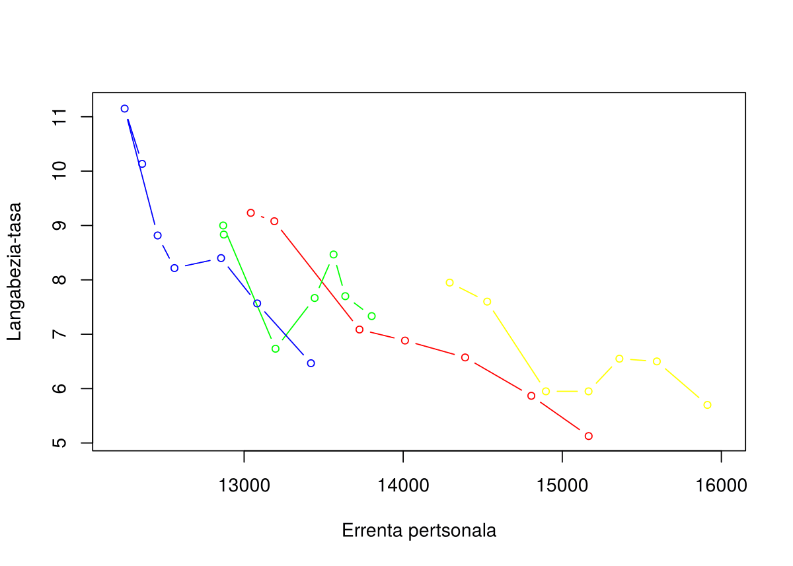
Horrela, egiaztatu dezakegu erlazio lineal duinak daudela dirudi. Batez ere marra gorrian. Nire ustez, hau gerta daiteke estatu asko ditugulako eta, beraz, lege hauek jarraitzen dituzten estatuen batez bestekoak joera bat osatzeko joera dutelako. Halaber, ikusten da beste koloreek joera bat jarraitzen dutela, baina ez da gorria bezain argia. Beraz, nire aipatu berri dudan bezala, hau gerta daiteke dagozkien legeak dituzten estatu kopurua txikia delako.
Eredu lineal sinplea egingo dugu bakoitzean.
Kodea erakutsi
#1. eredua - NN
lmNNperincunrate<-lm(VectorNNunrate~VectorNNperinc)
summary(lmNNperincunrate)##
## Call:
## lm(formula = VectorNNunrate ~ VectorNNperinc)
##
## Residuals:
## 1 2 3 4 5 6 7
## 0.2173 0.3420 -0.6412 -0.3047 0.0968 0.1756 0.1143
##
## Coefficients:
## Estimate Std. Error t value Pr(>|t|)
## (Intercept) 33.595195 2.743425 12.246 6.42e-05 ***
## VectorNNperinc -0.001885 0.000195 -9.663 0.000201 ***
## ---
## Signif. codes: 0 '***' 0.001 '**' 0.01 '*' 0.05 '.' 0.1 ' ' 1
##
## Residual standard error: 0.3798 on 5 degrees of freedom
## Multiple R-squared: 0.9492, Adjusted R-squared: 0.939
## F-statistic: 93.38 on 1 and 5 DF, p-value: 0.0002014Kodea erakutsi
#2. eredua - YN
lmYNperincunrate<-lm(VectorYNunrate~VectorYNperinc)
summary(lmYNperincunrate)##
## Call:
## lm(formula = VectorYNunrate ~ VectorYNperinc)
##
## Residuals:
## 1 2 3 4 5 6 7
## 0.2713 0.9185 -0.7193 -0.9647 0.2016 0.1290 0.1637
##
## Coefficients:
## Estimate Std. Error t value Pr(>|t|)
## (Intercept) 51.3169339 8.5429544 6.007 0.00184 **
## VectorYNperinc -0.0033542 0.0006717 -4.993 0.00413 **
## ---
## Signif. codes: 0 '***' 0.001 '**' 0.01 '*' 0.05 '.' 0.1 ' ' 1
##
## Residual standard error: 0.6999 on 5 degrees of freedom
## Multiple R-squared: 0.833, Adjusted R-squared: 0.7996
## F-statistic: 24.93 on 1 and 5 DF, p-value: 0.004128Kodea erakutsi
#3. eredua - NY
lmNYperincunrate<-lm(VectorNYunrate~VectorNYperinc)
summary(lmNYperincunrate)##
## Call:
## lm(formula = VectorNYunrate ~ VectorNYperinc)
##
## Residuals:
## 1 2 3 4 5 6 7
## 0.38421 0.31368 -0.89867 -0.58094 0.24891 0.47795 0.05485
##
## Coefficients:
## Estimate Std. Error t value Pr(>|t|)
## (Intercept) 24.5099601 6.2103048 3.947 0.0109 *
## VectorNYperinc -0.0011855 0.0004108 -2.886 0.0344 *
## ---
## Signif. codes: 0 '***' 0.001 '**' 0.01 '*' 0.05 '.' 0.1 ' ' 1
##
## Residual standard error: 0.5804 on 5 degrees of freedom
## Multiple R-squared: 0.6248, Adjusted R-squared: 0.5498
## F-statistic: 8.327 on 1 and 5 DF, p-value: 0.03436Kodea erakutsi
#4. eredua - YY
lmYYperincunrate<-lm(VectorYYunrate~VectorYYperinc)
summary(lmYYperincunrate)##
## Call:
## lm(formula = VectorYYunrate ~ VectorYYperinc)
##
## Residuals:
## 1 2 3 4 5 6 7
## 0.29793 0.45992 -1.40366 -0.16880 0.77694 0.10042 -0.06276
##
## Coefficients:
## Estimate Std. Error t value Pr(>|t|)
## (Intercept) 24.3092974 11.2372781 2.163 0.0828 .
## VectorYYperinc -0.0012254 0.0008421 -1.455 0.2054
## ---
## Signif. codes: 0 '***' 0.001 '**' 0.01 '*' 0.05 '.' 0.1 ' ' 1
##
## Residual standard error: 0.7638 on 5 degrees of freedom
## Multiple R-squared: 0.2975, Adjusted R-squared: 0.157
## F-statistic: 2.118 on 1 and 5 DF, p-value: 0.2054Espero zen bezala, errenta pertsonalaren eta langabezia-tasaren artean erlazio lineala dago legeen arabera. Ereduak estatistikoki esanguratsuak ateratzen dira eta zehaztasun handiagoz aurreikusten dute, bat izan ezik. Gorria da emaitza onenak eman dituen eredua eta berdea txarrena. Izatez, azken honek ez du esanguratsua atera. Honek ondorioztatzera eramaten nau estatu mota honek lege motak bereizten ez ziren ereduari kalte egiten ariko zitekeela.
Kodea erakutsi
plot(VectorNNperinc,VectorNNunrate,col="red",type = "p",cex=0.5,xlim = c(12200,16000),ylim = c(5.1,11.2),xlab = "Errenta pertsonala",ylab = "Langabezia-tasa",main = "Erregresio-zuzenak lege motaren arabera")
lines(VectorYYperinc,VectorYYunrate,col="green",type = "p",cex=0.5)
lines(VectorYNperinc,VectorYNunrate,col="blue",type = "p",cex=0.5)
lines(VectorNYperinc,VectorNYunrate,col="yellow",type = "p",cex=0.5)
#abline
abline(lmNNperincunrate,col="red")
abline(lmYNperincunrate,col="blue")
abline(lmNYperincunrate,col="yellow")
abline(lmYYperincunrate,col="green")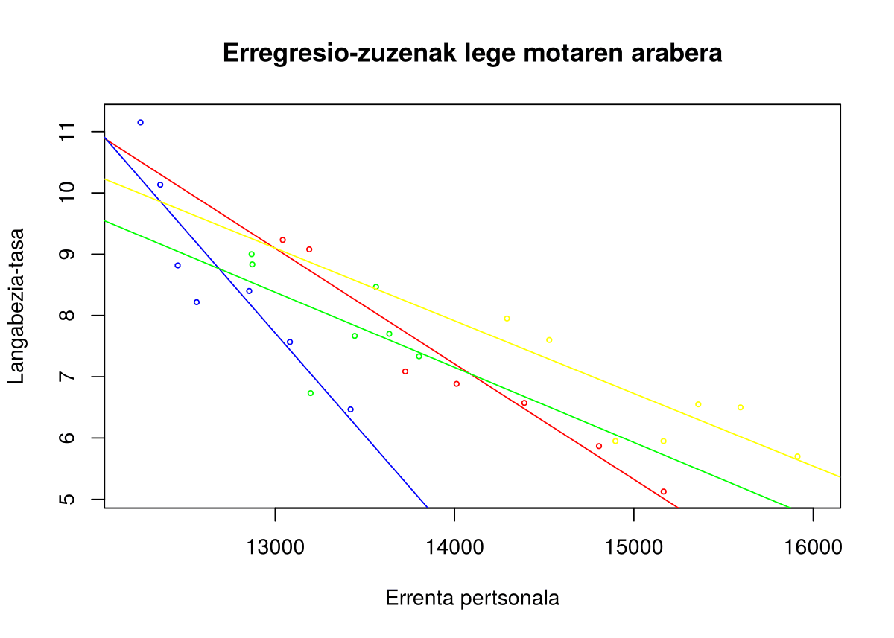
Erregresio berdea esanguratsua atera ez den arren, ondoriozta dezakegu denek joera negatiboa dutela. Hau da, errenta pertsonala handitzen den neurrian, langabezia-tasa jaisten da.
Gorria eta urdina (esanguratsuenak) behatuz, ondoriozta dezakegu halaber lege gorriak jarraitzen dituzten estatuek urdinek baino gehiago irabazten dutela tasa jaisten den neurrian. Hau malda edo beta1-ari zor zaio, urdinean handiagoa dena (-0.0033542) eta gorrian txikiagoa (-0.001885).
Bakoitza bere konfiantza-tartearekin marraztuko dugu.
Kodea erakutsi
#Konfiantza-tarteak 2x2 antolaeran
grid2<-matrix(c(1,2,3,4),ncol = 2,nrow = 2)
layout(grid2)
#Lehen NN
plot(VectorNNperinc,VectorNNunrate,col="red",type = "p",cex=0.8,xlab = "Errenta pertsonala",ylab = "Langabezia-tasa")
abline(lmNNperincunrate,col="red")
new<-data.frame(VectorNNperinc=seq(9000,23070,42))
prediccionrecta <- predict(lmNNperincunrate, new, interval = 'confidence')
lines(seq(9000,23070,42),(prediccionrecta[, 2]), lty = 2)
lines(seq(9000,23070,42),(prediccionrecta[, 3]), lty = 2)
prediccionrecta <- predict(lmNNperincunrate, new, interval = 'prediction')
lines(seq(9000,23070,42),(prediccionrecta[, 2]), lty = 2,col="red")
lines(seq(9000,23070,42),(prediccionrecta[, 3]), lty = 2,col="red")
#Bigarren YN
plot(VectorYNperinc,VectorYNunrate,col="blue",type = "p",cex=0.8,xlab = "Errenta pertsonala",ylab = "Langabezia-tasa")
abline(lmYNperincunrate,col="blue")
new<-data.frame(VectorYNperinc=seq(9000,23070,42))
prediccionrecta <- predict(lmYNperincunrate, new, interval = 'confidence')
lines(seq(9000,23070,42),(prediccionrecta[, 2]), lty = 2)
lines(seq(9000,23070,42),(prediccionrecta[, 3]), lty = 2)
prediccionrecta <- predict(lmYNperincunrate, new, interval = 'prediction')
lines(seq(9000,23070,42),(prediccionrecta[, 2]), lty = 2,col="red")
lines(seq(9000,23070,42),(prediccionrecta[, 3]), lty = 2,col="red")
#Hirugarren NY
plot(VectorNYperinc,VectorNYunrate,col="yellow",type = "p",cex=0.8,xlab = "Errenta pertsonala", ylab = "Langabezia-tasa")
abline(lmNYperincunrate,col="yellow")
new<-data.frame(VectorNYperinc=seq(9000,23070,42))
prediccionrecta <- predict(lmNYperincunrate, new, interval = 'confidence')
lines(seq(9000,23070,42),(prediccionrecta[, 2]), lty = 2)
lines(seq(9000,23070,42),(prediccionrecta[, 3]), lty = 2)
prediccionrecta <- predict(lmNYperincunrate, new, interval = 'prediction')
lines(seq(9000,23070,42),(prediccionrecta[, 2]), lty = 2,col="red")
lines(seq(9000,23070,42),(prediccionrecta[, 3]), lty = 2,col="red")
#Laugarren YY
plot(VectorYYperinc,VectorYYunrate,col="green",type = "p",cex=0.8,xlab = "Errenta pertsonala",ylab = "Langabezia-tasa")
abline(lmYYperincunrate,col="green")
new<-data.frame(VectorYYperinc=seq(9000,23070,42))
prediccionrecta <- predict(lmYYperincunrate, new, interval = 'confidence')
lines(seq(9000,23070,42),(prediccionrecta[, 2]), lty = 2)
lines(seq(9000,23070,42),(prediccionrecta[, 3]), lty = 2)
prediccionrecta <- predict(lmYYperincunrate, new, interval = 'prediction')
lines(seq(9000,23070,42),(prediccionrecta[, 2]), lty = 2,col="red")
lines(seq(9000,23070,42),(prediccionrecta[, 3]), lty = 2,col="red")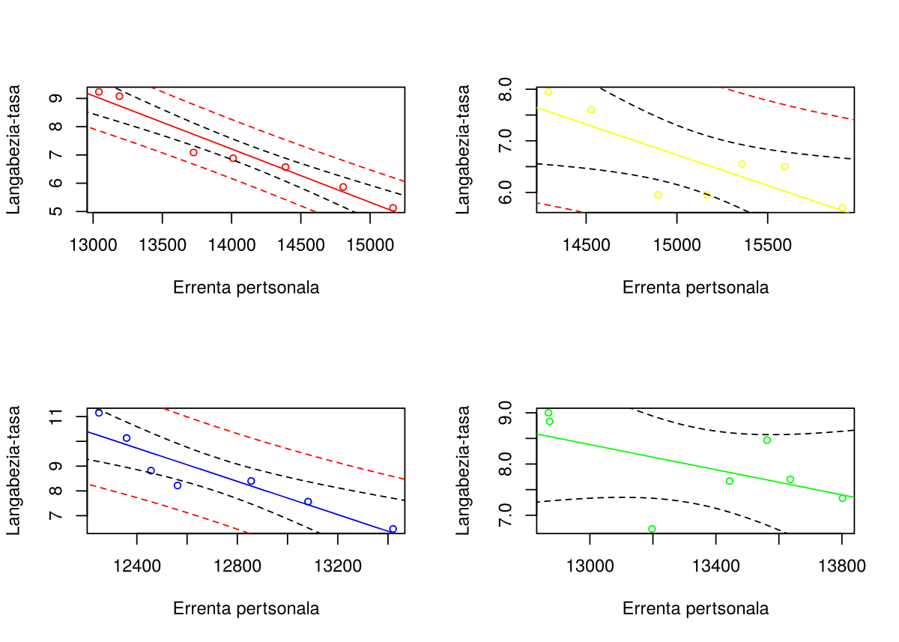
Ereduaren summary-k adierazten zuen bezala, ikus dezakegu gorria eta urdina ondo doitzen direla, aldiz, horia eta berdea ez dira zuzenera hain ondo doitzen.
Ikusiko dugu nola portatzen diren hondarrak.
Kodea erakutsi
#Erroreen grafikoak
mean(lmNNperincunrate[["residuals"]]) #Ia 0## [1] -1.982928e-17Kodea erakutsi
mean(lmNYperincunrate[["residuals"]]) #Ia 0## [1] -3.971858e-18Kodea erakutsi
mean(lmYNperincunrate[["residuals"]]) #Ia 0## [1] -3.966244e-17Kodea erakutsi
mean(lmYYperincunrate[["residuals"]]) #Ia 0## [1] -4.361397e-17Kodea erakutsi
layout(grid1)
plot(lmNNperincunrate[["residuals"]],col="red",cex=0.8,type = "b",ylim = c(-1.41,0.92),xlab = "Behaketa-zenbakia",ylab = "Errorea",main = "Errorea behaketa bakoitzean")
lines(lmNYperincunrate[["residuals"]],col="yellow",cex=0.8,type = "b")
lines(lmYNperincunrate[["residuals"]],col="blue",cex=0.8,type = "b")
lines(lmYYperincunrate[["residuals"]],col="green",cex=0.8,type = "b")
abline(h=0)
plot(density(lmNNperincunrate[["residuals"]]),col="red",ylab = "Dentsitatea",main = "Erroreen dentsitate-funtzioa")
lines(density(lmNYperincunrate[["residuals"]]),col="yellow")
lines(density(lmYNperincunrate[["residuals"]]),col="blue")
lines(density(lmYYperincunrate[["residuals"]]),col="green")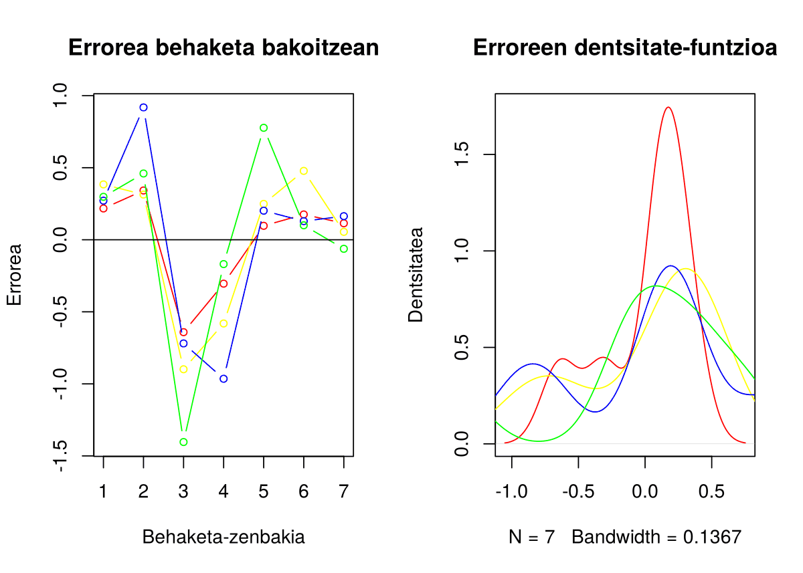
Erroreen batez bestekoa nulua den arren, dentsitate-funtzioan ikusten da ez direla normalaren oso antzekoak. Hau izan daiteke dugun n txikiagatik.
Bitxia iruditzen zait, halaber, hirugarren behaketan guztiek balio oso negatiboa eman zutela. Ikus daiteke atal honetako lehen grafikoan lerro bakoitzaren hirugarren behaketa ohi baino baxuagoa dela eta, gero, erregresio-zuzenean, behean ere ateratzen direla. Bektore hauek nola kalkulatu diren kontuan hartuta, honek ondorioztatzera eramaten nau hirugarren behaketan, hau da, 1984an, zerbait gertatu izan zitekeela.
6. Erregresio lineal anizkoitza legeen arabera
Lerro berean, erregresio lineal anizkoitz bat egingo dugu legeen arabera. Hau da, lau erregresio lineal anizkoitz egingo ditugu, lege mota bakoitzeko bat. Aurreko atalen emaitzak ikusita, espero dugu eredu mota honekin emaitza hobeak lortzea.
Eredu osoak kalkulatzen ditugu.
Kodea erakutsi
fullmodelNN<-lm(VectorNNperinc~VectorNNbeertax+VectorNNmrall+VectorNNvmiles+VectorNNunrate)
summary(fullmodelNN)##
## Call:
## lm(formula = VectorNNperinc ~ VectorNNbeertax + VectorNNmrall +
## VectorNNvmiles + VectorNNunrate)
##
## Residuals:
## 1 2 3 4 5 6 7
## -82.39 79.69 -45.90 -36.63 97.17 50.13 -62.08
##
## Coefficients:
## Estimate Std. Error t value Pr(>|t|)
## (Intercept) 24280.943 6617.288 3.669 0.0669 .
## VectorNNbeertax -15642.977 7895.101 -1.981 0.1861
## VectorNNmrall 8.986 1934.563 0.005 0.9967
## VectorNNvmiles 31.066 464.293 0.067 0.9527
## VectorNNunrate -302.712 183.353 -1.651 0.2405
## ---
## Signif. codes: 0 '***' 0.001 '**' 0.01 '*' 0.05 '.' 0.1 ' ' 1
##
## Residual standard error: 127.3 on 2 degrees of freedom
## Multiple R-squared: 0.9915, Adjusted R-squared: 0.9744
## F-statistic: 58.04 on 4 and 2 DF, p-value: 0.01701Ereduaren emaitza esanguratsua da eta lortzen dugun R-squared erregresio sinplean baino hobea da (%97tik %99ra). Hala ere, gainerako parametroak okertzen dira (hondarren desbideratze estandarra, p-balioa eta F-statistic). Gainera, ez da bektorerik esanguratsua ateratzen; ikusi beharko da zer gertatzen den stepAIC aplikatzen dugunean.
Kodea erakutsi
fullmodelNY<-lm(VectorNYperinc~VectorNYbeertax+VectorNYmrall+VectorNYvmiles+VectorNYunrate)
summary(fullmodelNY)##
## Call:
## lm(formula = VectorNYperinc ~ VectorNYbeertax + VectorNYmrall +
## VectorNYvmiles + VectorNYunrate)
##
## Residuals:
## 1 2 3 4 5 6 7
## -7.660 -13.141 41.265 -83.707 73.330 -11.896 1.809
##
## Coefficients:
## Estimate Std. Error t value Pr(>|t|)
## (Intercept) 31537.41 6628.69 4.758 0.0415 *
## VectorNYbeertax -3749.88 2979.21 -1.259 0.3352
## VectorNYmrall -4570.83 854.31 -5.350 0.0332 *
## VectorNYvmiles -436.88 489.20 -0.893 0.4661
## VectorNYunrate -90.07 96.46 -0.934 0.4490
## ---
## Signif. codes: 0 '***' 0.001 '**' 0.01 '*' 0.05 '.' 0.1 ' ' 1
##
## Residual standard error: 85.04 on 2 degrees of freedom
## Multiple R-squared: 0.9928, Adjusted R-squared: 0.9783
## F-statistic: 68.51 on 4 and 2 DF, p-value: 0.01444Eredu honetan p-balioa, F-statistic eta, batez ere, R-squared hobetzen dira eredu sinplearekin alderatuta. Aldiz, errore estandarra handitzen da eta esanguratsuak ez diren parametroak daude. Beraz, stepAIC aplikatuko dugu.
Kodea erakutsi
fullmodelYN<-lm(VectorYNperinc~VectorYNbeertax+VectorYNmrall+VectorYNvmiles+VectorYNunrate)
summary(fullmodelYN)##
## Call:
## lm(formula = VectorYNperinc ~ VectorYNbeertax + VectorYNmrall +
## VectorYNvmiles + VectorYNunrate)
##
## Residuals:
## 1 2 3 4 5 6 7
## 29.7038 -10.0877 -90.7089 25.9198 66.9613 -21.2021 -0.5863
##
## Coefficients:
## Estimate Std. Error t value Pr(>|t|)
## (Intercept) 6080.50 2906.06 2.092 0.171
## VectorYNbeertax 5605.58 9692.54 0.578 0.621
## VectorYNmrall 772.73 1371.03 0.564 0.630
## VectorYNvmiles 477.76 254.42 1.878 0.201
## VectorYNunrate -139.03 67.11 -2.072 0.174
##
## Residual standard error: 86.07 on 2 degrees of freedom
## Multiple R-squared: 0.9864, Adjusted R-squared: 0.9591
## F-statistic: 36.13 on 4 and 2 DF, p-value: 0.02711Eredu honi dagokionez, ikusten dugu hondarren errore estandarra handitzen dela, baita R-squared eta F-statistic ere. Aldiz, p-balioa okertzen da eta ez da parametrorik esanguratsua ateratzen. Eredua esanguratsua izatea eta parametroak ez izatea NN ereduan gertatzen den bezala multikolinealitatea dugulako izan daiteke. Beraz, aurreko bi ereduekin bezala, stepAIC aplikatuko dugu.
Kodea erakutsi
fullmodelYY<-lm(VectorYYperinc~VectorYYbeertax+VectorYYmrall+VectorYYvmiles+VectorYYunrate)
summary(fullmodelYY)##
## Call:
## lm(formula = VectorYYperinc ~ VectorYYbeertax + VectorYYmrall +
## VectorYYvmiles + VectorYYunrate)
##
## Residuals:
## 1 2 3 4 5 6 7
## -67.447 30.779 21.389 -4.033 69.308 -39.547 -10.450
##
## Coefficients:
## Estimate Std. Error t value Pr(>|t|)
## (Intercept) 4118.48 2172.25 1.896 0.1984
## VectorYYbeertax 11042.95 4067.14 2.715 0.1131
## VectorYYmrall -392.00 384.37 -1.020 0.4151
## VectorYYvmiles 638.22 84.08 7.591 0.0169 *
## VectorYYunrate -37.65 46.53 -0.809 0.5034
## ---
## Signif. codes: 0 '***' 0.001 '**' 0.01 '*' 0.05 '.' 0.1 ' ' 1
##
## Residual standard error: 78.89 on 2 degrees of freedom
## Multiple R-squared: 0.9849, Adjusted R-squared: 0.9546
## F-statistic: 32.55 on 4 and 2 DF, p-value: 0.03003Azken eredu honetan hau gertatzen da: hondarren errore estandarra handitzen da, F-statistic handitzen da eta R-squared ere handitzen da. Aldiz, p-balioa txikitzen da eta esanguratsu bihurtzen da, sinplean gertatzen zenaren aurka. Gainerako ereduei bezala, stepAIC aplikatuko dugu hobetzeko.
Lau eredu hauetatik ondoriozta dezakegu eredu guztietan, dagokien eredu sinplearekin alderatuta, hondarren errore estandarra okertzen dela. Nire ustez, hau gerta daiteke “soberan” dauden edo eredua okertzen duten parametroak ditugulako eta stepAIC bidez murrizten saiatuko garelako. R-squared-aren balioan hazkunde garrantzitsu bat ere ikus dezakegu.
stepAIC aplikatuko dugu lor daitekeen eredurik onena lortzeko.
Kodea erakutsi
#reducedmodelNN<-stepAIC(fullmodelNN,direction="backward")
##reducedmodelNY<-stepAIC(fullmodelNY,direction="backward")
#reducedmodelYN<-stepAIC(fullmodelYN,direction="backward")
#reducedmodelYY<-stepAIC(fullmodelYY,direction="backward")
##Oharra: lehen aipatu bezala, erroreak izan nituen stepAIC funtzioarekin R Markdown-en; aurreko lerroek ez badute funtzionatzen, exekutatu hurrengoak. Lortzen den emaitza dira.
reducedmodelNN<-lm(VectorNNperinc~VectorNNbeertax+VectorNNunrate)
reducedmodelNY<-lm(VectorNYperinc~VectorNYbeertax+VectorNYmrall+VectorNYunrate+VectorNYvmiles)
reducedmodelYN<-lm(VectorYNperinc~VectorYNbeertax+VectorYNunrate+VectorYNvmiles)
reducedmodelYY<-lm(VectorYYperinc~VectorYYbeertax+VectorYYvmiles)
summary(reducedmodelNN)##
## Call:
## lm(formula = VectorNNperinc ~ VectorNNbeertax + VectorNNunrate)
##
## Residuals:
## 1 2 3 4 5 6 7
## -82.95 81.84 -41.30 -44.20 95.75 50.39 -59.52
##
## Coefficients:
## Estimate Std. Error t value Pr(>|t|)
## (Intercept) 24602.65 1578.29 15.588 9.89e-05 ***
## VectorNNbeertax -15634.33 3519.19 -4.443 0.0113 *
## VectorNNunrate -311.92 49.34 -6.322 0.0032 **
## ---
## Signif. codes: 0 '***' 0.001 '**' 0.01 '*' 0.05 '.' 0.1 ' ' 1
##
## Residual standard error: 90.12 on 4 degrees of freedom
## Multiple R-squared: 0.9914, Adjusted R-squared: 0.9872
## F-statistic: 231.5 on 2 and 4 DF, p-value: 7.335e-05Kodea erakutsi
summary(reducedmodelNY)##
## Call:
## lm(formula = VectorNYperinc ~ VectorNYbeertax + VectorNYmrall +
## VectorNYunrate + VectorNYvmiles)
##
## Residuals:
## 1 2 3 4 5 6 7
## -7.660 -13.141 41.265 -83.707 73.330 -11.896 1.809
##
## Coefficients:
## Estimate Std. Error t value Pr(>|t|)
## (Intercept) 31537.41 6628.69 4.758 0.0415 *
## VectorNYbeertax -3749.88 2979.21 -1.259 0.3352
## VectorNYmrall -4570.83 854.31 -5.350 0.0332 *
## VectorNYunrate -90.07 96.46 -0.934 0.4490
## VectorNYvmiles -436.88 489.20 -0.893 0.4661
## ---
## Signif. codes: 0 '***' 0.001 '**' 0.01 '*' 0.05 '.' 0.1 ' ' 1
##
## Residual standard error: 85.04 on 2 degrees of freedom
## Multiple R-squared: 0.9928, Adjusted R-squared: 0.9783
## F-statistic: 68.51 on 4 and 2 DF, p-value: 0.01444Kodea erakutsi
summary(reducedmodelYN)##
## Call:
## lm(formula = VectorYNperinc ~ VectorYNbeertax + VectorYNunrate +
## VectorYNvmiles)
##
## Residuals:
## 1 2 3 4 5 6 7
## 33.011 -9.531 -77.829 10.993 77.635 -57.126 22.846
##
## Coefficients:
## Estimate Std. Error t value Pr(>|t|)
## (Intercept) 5058.90 1996.53 2.534 0.0851 .
## VectorYNbeertax 10381.12 4136.82 2.509 0.0870 .
## VectorYNunrate -119.37 50.39 -2.369 0.0986 .
## VectorYNvmiles 601.26 113.63 5.291 0.0132 *
## ---
## Signif. codes: 0 '***' 0.001 '**' 0.01 '*' 0.05 '.' 0.1 ' ' 1
##
## Residual standard error: 75.66 on 3 degrees of freedom
## Multiple R-squared: 0.9842, Adjusted R-squared: 0.9684
## F-statistic: 62.22 on 3 and 3 DF, p-value: 0.003361Kodea erakutsi
summary(reducedmodelYY)##
## Call:
## lm(formula = VectorYYperinc ~ VectorYYbeertax + VectorYYvmiles)
##
## Residuals:
## 1 2 3 4 5 6 7
## -117.83 50.77 36.85 44.17 22.35 -13.70 -22.59
##
## Coefficients:
## Estimate Std. Error t value Pr(>|t|)
## (Intercept) 4465.20 1625.23 2.747 0.051510 .
## VectorYYbeertax 8423.78 2549.22 3.304 0.029809 *
## VectorYYvmiles 610.93 56.82 10.752 0.000424 ***
## ---
## Signif. codes: 0 '***' 0.001 '**' 0.01 '*' 0.05 '.' 0.1 ' ' 1
##
## Residual standard error: 72.4 on 4 degrees of freedom
## Multiple R-squared: 0.9745, Adjusted R-squared: 0.9618
## F-statistic: 76.47 on 2 and 4 DF, p-value: 0.0006497Eredu murriztuak ikusita ondoriozta dezakegu parametro guztiak hobetu direla: hondarren errore estandarra, F-statistic, R-squared eta p-balioa. Beraz, hauek dira per capita errenta gainerako parametroekin aurreikusteko lor ditzakegun eredurik onenak. Aipatu behar da aldatu ez den eredu bakarra lege hauek jarraitzen dituena dela: kartzelarik ez eta zerbitzuak bai.
7. Erregresio logistikoa
Orain arte ez dugu gutxieneko adin legalaren zutabea (mlda) ezertarako erabili, interesgarria iruditzen zait eta agian informazioren bat atera dezakegu erregresio logistikoa aplikatuz, erregresio lineala asko aplikatu dugulako.
7.1 Datu orokorrak
Lehenik eta behin, ikusiko dugu joera orokorrik dagoen edo zer aldaketa antzeman daitezkeen urteetan zehar, estatuetako mlda-ri dagokionez.
Kodea erakutsi
#Gure data.frame-ko gutxieneko eta gehienezko adina kalkulatzen ditugu
edadMIN<-data$mlda[1]
edadMAX<-data$mlda[1]
i<-1
while (i<=dim(data)[1]) {
if (data$mlda[i]<edadMIN) {
edadMIN<-data$mlda[i]
}
if (data$mlda[i]>edadMAX) {
edadMAX<-data$mlda[i]
}
i<-i+1
}
edadMIN## [1] 18Kodea erakutsi
edadMAX## [1] 21Ikusten dugunez, gure adin-tartea 18 eta 21 artekoa izango da, beraz, hurrengoa kalkulatzeko baliatuko gara: estatu bakoitzeko urteen eta adinen araberako bereizketa.
Kodea erakutsi
#Aldagaiak hasieratzen ditugu
i<-1
cont18_1982<-0
cont18_1983<-0
cont18_1984<-0
cont18_1985<-0
cont18_1986<-0
cont18_1987<-0
cont18_1988<-0
cont19_1982<-0
cont19_1983<-0
cont19_1984<-0
cont19_1985<-0
cont19_1986<-0
cont19_1987<-0
cont19_1988<-0
cont20_1982<-0
cont20_1983<-0
cont20_1984<-0
cont20_1985<-0
cont20_1986<-0
cont20_1987<-0
cont20_1988<-0
cont21_1982<-0
cont21_1983<-0
cont21_1984<-0
cont21_1985<-0
cont21_1986<-0
cont21_1987<-0
cont21_1988<-0
while (i<=dim(data)[1]) {
if (data$year[i]==1982){
if (data$mlda[i]>=18 && data$mlda[i]<19) {
cont18_1982<-cont18_1982+1
}
if (data$mlda[i]>=19 && data$mlda[i]<20) {
cont19_1982<-cont19_1982+1
}
if (data$mlda[i]>=20 && data$mlda[i]<21) {
cont20_1982<-cont20_1982+1
}
if (data$mlda[i]==21) {
cont21_1982<-cont21_1982+1
}
}
if (data$year[i]==1983){
if (data$mlda[i]>=18 && data$mlda[i]<19) {
cont18_1983<-cont18_1983+1
}
if (data$mlda[i]>=19 && data$mlda[i]<20) {
cont19_1983<-cont19_1983+1
}
if (data$mlda[i]>=20 && data$mlda[i]<21) {
cont20_1983<-cont20_1983+1
}
if (data$mlda[i]==21) {
cont21_1983<-cont21_1983+1
}
}
if (data$year[i]==1984){
if (data$mlda[i]>=18 && data$mlda[i]<19) {
cont18_1984<-cont18_1984+1
}
if (data$mlda[i]>=19 && data$mlda[i]<20) {
cont19_1984<-cont19_1984+1
}
if (data$mlda[i]>=20 && data$mlda[i]<21) {
cont20_1984<-cont20_1984+1
}
if (data$mlda[i]==21) {
cont21_1984<-cont21_1984+1
}
}
if (data$year[i]==1985){
if (data$mlda[i]>=18 && data$mlda[i]<19) {
cont18_1985<-cont18_1985+1
}
if (data$mlda[i]>=19 && data$mlda[i]<20) {
cont19_1985<-cont19_1985+1
}
if (data$mlda[i]>=20 && data$mlda[i]<21) {
cont20_1985<-cont20_1985+1
}
if (data$mlda[i]==21) {
cont21_1985<-cont21_1985+1
}
}
if (data$year[i]==1986){
if (data$mlda[i]>=18 && data$mlda[i]<19) {
cont18_1986<-cont18_1986+1
}
if (data$mlda[i]>=19 && data$mlda[i]<20) {
cont19_1986<-cont19_1986+1
}
if (data$mlda[i]>=20 && data$mlda[i]<21) {
cont20_1986<-cont20_1986+1
}
if (data$mlda[i]==21) {
cont21_1986<-cont21_1986+1
}
}
if (data$year[i]==1987){
if (data$mlda[i]>=18 && data$mlda[i]<19) {
cont18_1987<-cont18_1987+1
}
if (data$mlda[i]>=19 && data$mlda[i]<20) {
cont19_1987<-cont19_1987+1
}
if (data$mlda[i]>=20 && data$mlda[i]<21) {
cont20_1987<-cont20_1987+1
}
if (data$mlda[i]==21) {
cont21_1987<-cont21_1987+1
}
}
if (data$year[i]==1988){
if (data$mlda[i]>=18 && data$mlda[i]<19) {
cont18_1988<-cont18_1988+1
}
if (data$mlda[i]>=19 && data$mlda[i]<20) {
cont19_1988<-cont19_1988+1
}
if (data$mlda[i]>=20 && data$mlda[i]<21) {
cont20_1988<-cont20_1988+1
}
if (data$mlda[i]==21) {
cont21_1988<-cont21_1988+1
}
}
i<-i+1
}
#Ondorioak errazteko, hamartarrak zituzten estatuen adinak borobildu ditut
#Adin bakoitzaren kontagailuak batzen ditugu bektoreak osatzeko
vector18<-c(cont18_1982,cont18_1983,cont18_1984,cont18_1985,cont18_1986,cont18_1987,cont18_1988)
vector19<-c(cont19_1982,cont19_1983,cont19_1984,cont19_1985,cont19_1986,cont19_1987,cont19_1988)
vector20<-c(cont20_1982,cont20_1983,cont20_1984,cont20_1985,cont20_1986,cont20_1987,cont20_1988)
vector21<-c(cont21_1982,cont21_1983,cont21_1984,cont21_1985,cont21_1986,cont21_1987,cont21_1988)
sum(vector18)+sum(vector19)+sum(vector20)+sum(vector21)==dim(data)[1] #Ondo egin dugula egiaztatzeko modu bat## [1] TRUEKodea erakutsi
#Emaitzak marrazten ditugu
layout(grid2)
plot(data$year[1:7],vector18,type = 'b',xlab = "Urtea",ylab = "Estatu kopurua, 18 urte",col="green")
plot(data$year[1:7],vector19,type = 'b',xlab = "Urtea",ylab = "Estatu kopurua, 19 urte",col="red")
plot(data$year[1:7],vector20,type = 'b',xlab = "Urtea",ylab = "Estatu kopurua, 20 urte",col="blue")
plot(data$year[1:7],vector21,type = 'b',xlab = "Urtea",ylab = "Estatu kopurua, 21 urte")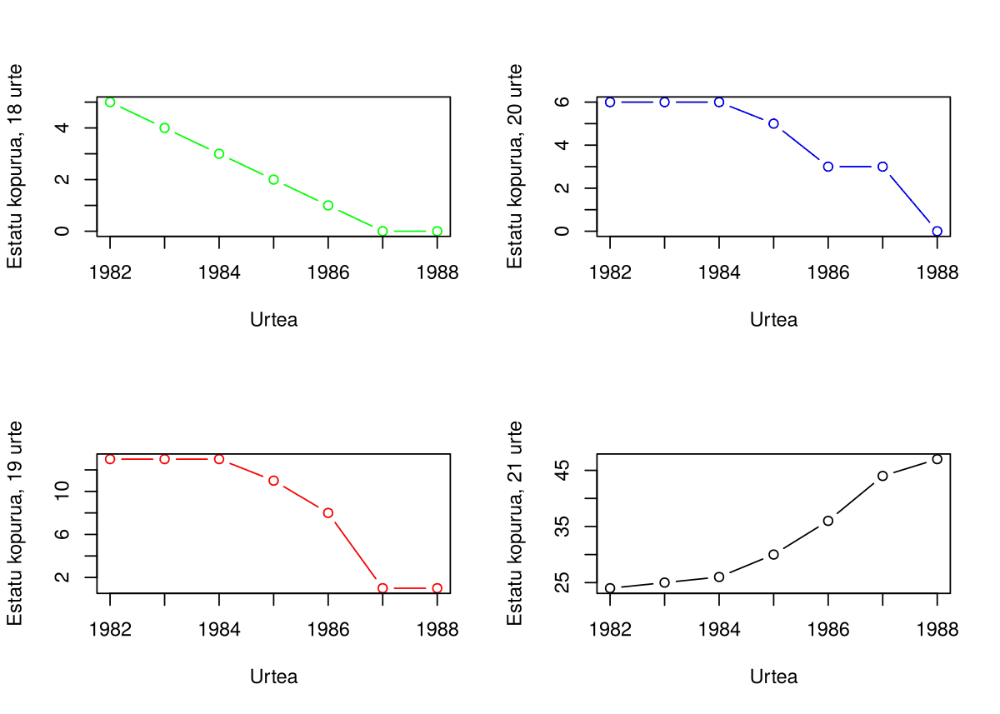
Kodea erakutsi
#Adin bakoitzaren koloreak mantenduz, guztiak grafiko batean marraztu ditugu
layout(1)
plot(data$year[1:7],vector18,type = 'b',ylim = c(0,47),col="green",xlab = "Urtea",ylab = "Estatu kopurua",main="Estatu kopuruaren bilakaera mlda-ren arabera")
lines(data$year[1:7],vector19,type = 'b',col="red")
lines(data$year[1:7],vector20,type = 'b',col="blue")
lines(data$year[1:7],vector21,type = 'b')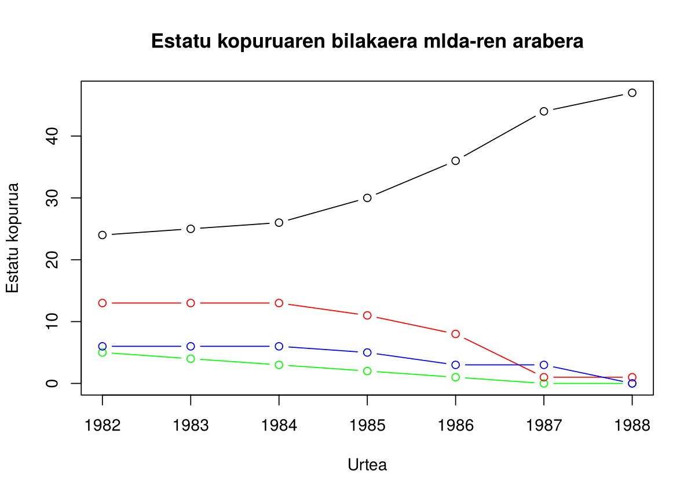
Grafiko hauek behatuz, esan dezakegu mlda 18, 19 eta 20 duten estatuak urteak pasa ahala gutxitzen doazela. Horregatik, 21 urteko adina duten estatuen kopurua asko handitzen da.
18, 19 eta 20 adinen lerroak batuko ditugu eta 21 adinaren bilakaerarekin batera marraztuko. Hau da, 21 dutenen eta ez dutenen artean zatituko dugu.
Kodea erakutsi
vectorNO21<-vector18+vector19+vector20
plot(data$year[1:7],vector21,type = 'b',ylim = c(1,47),xlab = "Urtea",ylab = "Estatu kopurua",main="Estatu kopuruaren bilakaera mlda-ren arabera")
lines(data$year[1:7],vectorNO21,type = 'b',col="red")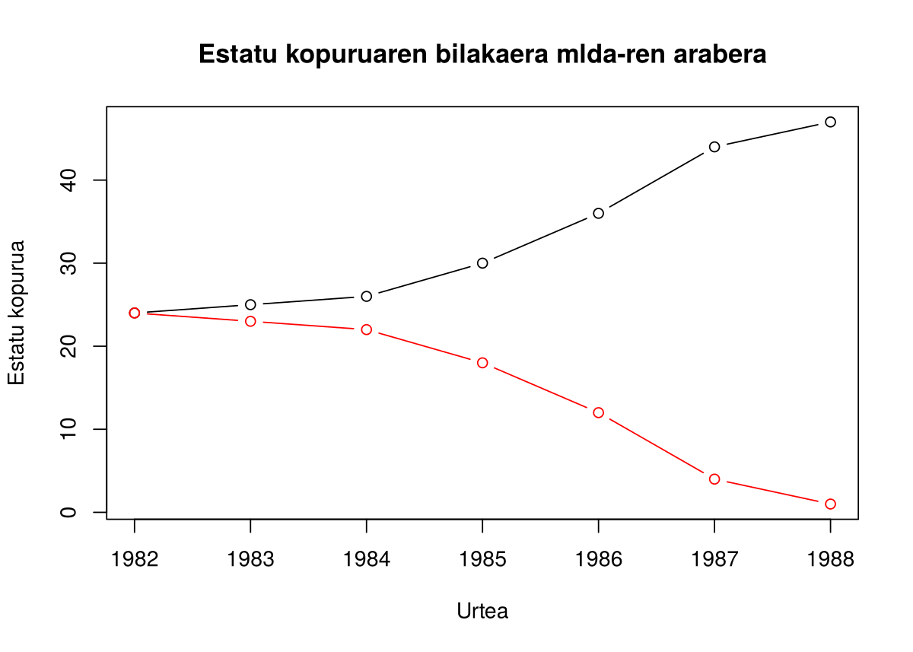
Ikusten denez, hemen ere joerak argi ikusten dira. Gainera, urtero biek batura bera (48) egin behar dutenez, biak berdinak dira baina aurkakoak.
Esan dezakegu agian estatuek gutxieneko adin legala 21 urtera igotzeko duten joera honek zerikusia duela gainerako parametroetan (orokorrean) lortu diren emaitza onekin. Adibidez, errenta pertsonalaren joera positiboarekin edo langabezia-tasaren jaitsierarekin. Baina, hala ere, uste dut gehiago aztertu beharko litzatekeela hau baieztatu aurretik.
7.2 Lehen erregresio logistikoa
Lehen erregresio logistikoa egingo dugu. Bereiziko dugu estatuek mlda 21 duten ala ez eta urteen arabera ordenatuko ditugu.
Kodea erakutsi
#Aldagaiak hasieratzen ditugu
i<-1
j<-1
j2<-1
j3<-1
j4<-1
j5<-1
j6<-1
j7<-1
reg82<-0
reg83<-0
reg84<-0
reg85<-0
reg86<-0
reg87<-0
reg88<-0
while (i<=dim(data)[1]) {
if (data$year[i]==1982) {
if (data$mlda[i]==21) {
reg82[j]<-1
j<-j+1
}
else {
reg82[j]<-0
j<-j+1
}
}
if (data$year[i]==1983) {
if (data$mlda[i]==21) {
reg83[j2]<-1
j2<-j2+1
}
else {
reg83[j2]<-0
j2<-j2+1
}
}
if (data$year[i]==1984) {
if (data$mlda[i]==21) {
reg84[j3]<-1
j3<-j3+1
}
else {
reg84[j3]<-0
j3<-j3+1
}
}
if (data$year[i]==1985) {
if (data$mlda[i]==21) {
reg85[j4]<-1
j4<-j4+1
}
else {
reg85[j4]<-0
j4<-j4+1
}
}
if (data$year[i]==1986) {
if (data$mlda[i]==21) {
reg86[j5]<-1
j5<-j5+1
}
else {
reg86[j5]<-0
j5<-j5+1
}
}
if (data$year[i]==1987) {
if (data$mlda[i]==21) {
reg87[j6]<-1
j6<-j6+1
}
else {
reg87[j6]<-0
j6<-j6+1
}
}
if (data$year[i]==1988) {
if (data$mlda[i]==21) {
reg88[j7]<-1
j7<-j7+1
}
else {
reg88[j7]<-0
j7<-j7+1
}
}
i<-i+1
}
#Dena, ordenan, bektore berrian batzen dugu
todos<-c(reg82,reg83,reg84,reg85,reg86,reg87,reg88)
logisticmodel <- glm(todos ~ seq(1,336,1), family = "binomial")
summary(logisticmodel)##
## Call:
## glm(formula = todos ~ seq(1, 336, 1), family = "binomial")
##
## Deviance Residuals:
## Min 1Q Median 3Q Max
## -2.2767 -1.0801 0.5273 0.8317 1.4370
##
## Coefficients:
## Estimate Std. Error z value Pr(>|z|)
## (Intercept) -0.620256 0.236816 -2.619 0.00882 **
## seq(1, 336, 1) 0.009328 0.001448 6.443 1.17e-10 ***
## ---
## Signif. codes: 0 '***' 0.001 '**' 0.01 '*' 0.05 '.' 0.1 ' ' 1
##
## (Dispersion parameter for binomial family taken to be 1)
##
## Null deviance: 415.78 on 335 degrees of freedom
## Residual deviance: 366.43 on 334 degrees of freedom
## AIC: 370.43
##
## Number of Fisher Scoring iterations: 4Kodea erakutsi
Probs <- predict(logisticmodel, type = "response")
library(ggplot2)
df <- data.frame(x=seq(1,336,1), status = todos, Probs=Probs)
p <- ggplot(aes(col=status), data=df) +
geom_hline(aes(yintercept=0)) +
geom_segment(aes(x,status,xend=x,yend=status-status)) +
geom_point(aes(x,status),size=3)
p <- p + geom_line(aes(x, Probs), col ="red")
p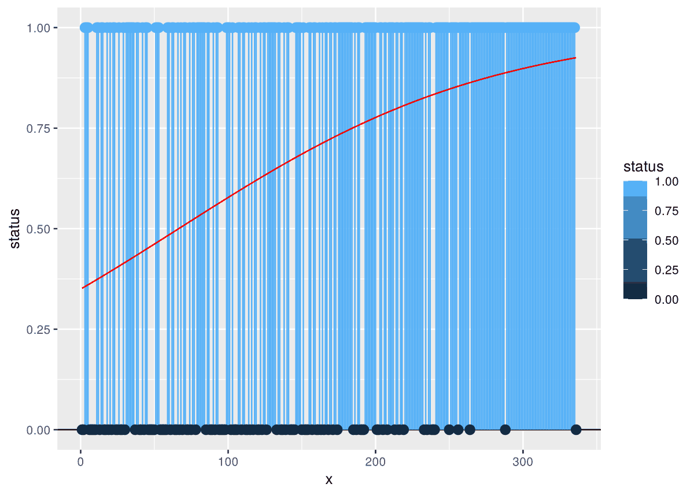
Erregresioa esanguratsua atera eta marrazten badugu ere, ez dut uste ondorioak ateratzeko modurik onena denik, x ardatza “ausazkoa” baita. Egia da blokeka ordenatuta dagoela, lehen 48ak 1982koak, hurrengo 48ak 1983koak eta horrela 1988ra arte, baina blokeen barruan ez dago ordena berezirik, data.frame-aren ordena jarraitzen du soilik. Beraz, uste dut, joera positiboa ikus dezakegun arren, ez dela ondorioak ateratzeko onena eta emaitza hobeak emango dizkiguten beste eredu bat aurki dezakegula.
7.3 Bigarren erregresio logistikoa
Urteen bilakaera x ardatzean ikusiko dugun erregresio logistiko bat egingo dugu. Horretarako, klaseko praktikakoen antzeko urratsak egingo ditugu.
Kodea erakutsi
#Datuak jasotzeko data.frame bat sortzen dugu
data1<-data.frame(Year=NA,Total=NA,num_21=NA,numNO_21=NA)
data1[1:7,1]<-seq(1982,1988,1)
data1[1:7,2]<-vectorNO21+vector21
data1[1:7,3]<-vector21
data1[1:7,4]<-vectorNO21
#Eredua sortzen dugu
glm.out <- glm(cbind(num_21, Total-num_21) ~ Year, family=binomial(logit), data=data1)
summary(glm.out)##
## Call:
## glm(formula = cbind(num_21, Total - num_21) ~ Year, family = binomial(logit),
## data = data1)
##
## Deviance Residuals:
## 1 2 3 4 5 6 7
## 1.4408 0.1495 -1.1341 -1.4589 -0.9180 1.0867 1.9654
##
## Coefficients:
## Estimate Std. Error z value Pr(>|z|)
## (Intercept) -907.44576 139.59340 -6.501 8.00e-11 ***
## Year 0.45763 0.07035 6.505 7.75e-11 ***
## ---
## Signif. codes: 0 '***' 0.001 '**' 0.01 '*' 0.05 '.' 0.1 ' ' 1
##
## (Dispersion parameter for binomial family taken to be 1)
##
## Null deviance: 61.818 on 6 degrees of freedom
## Residual deviance: 11.400 on 5 degrees of freedom
## AIC: 41.868
##
## Number of Fisher Scoring iterations: 4Kodea erakutsi
#Marrazten dugu
plot(num_21/Total ~ Year, data=data1)
lines(data1$Year, glm.out$fitted, type="l", col="red")
title(main="Mlda 21 datuak eta erregresio logistiko doitua")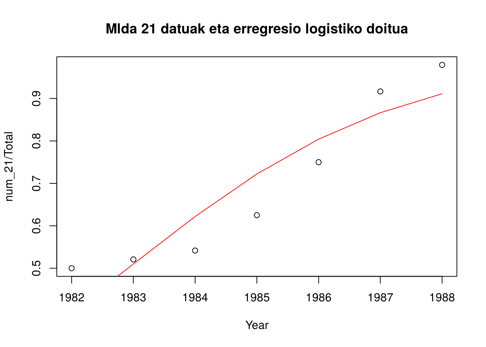
Eredu honekin, lehen genuena hobetzea lortu dugu. Grafikoan ikusten ez den arren, datuen summary-a asko hobetzen da. AIC askoz txikiagoa da eta intercept-aren eta beta1-en p-balioak lehen baino askoz esanguratsuagoak dira.
data.frame-eko laugarren zutabearekin beste erregresio logistiko bat egin genezake. Baina ez genuke daturik garrantzitsurik lortuko, lehen aipatu dugun bezala, biek 48 batzen dutenez, bat bestearen aurkakoa baita. Beraz, eredu bera lortuko genuke alde bakar batekin: beta1-ek balio bera izango luke baina zeinu negatiboarekin.